全景：模拟电路的积木地图
先看地图：每一层用下一层的积木搭成，每一层也有自己要盯的指标。
要点：
- 层级从下到上是：器件 → 晶体管级原语 → 电路模块 → 混合信号子系统 → SoC 里的模拟 IP。
- 往上走，指标从"器件参数"（gm/ID、gm·ro、AVT）逐步变成"系统参数"（抖动、ENOB、BER、PSRR）。
- 证据标签：【常识】教科书或通用知识；【硅片·研究】研究器件或研究电路的实测；【硅片·量产平台】量产工艺数据；【TCAD】器件仿真；【仿真】电路或版图仿真；【厂商】厂商或代工厂的资料与新闻稿；【观点】行业访谈；【推断】本页自己的推理。
| 层级 | 典型模块 | 干什么 | 主要指标 | 本页章节 |
|---|---|---|---|---|
| 器件 | MOSFET（平面 / FinFET / GAA）、BJT/二极管、电阻、MOM/MIM 电容、电感 | 提供跨导、输出电阻、匹配、无源元件 | gm/ID、gm·ro、fT、AVT、1/f 噪声、电阻温度系数、电感 Q | §1、§7；详见主指南 |
| 晶体管级原语 | 电流镜、差分对、共源 / 共栅 / 共漏单管 | 复制电流、放大差值、放大或缓冲 | Rout、余量、比例误差；失调、CMRR；增益、带宽 | §1、§2 |
| 电路模块 | OTA / 运放、比较器、bandgap、电流基准、LDO | 放大、判决、产生稳定电压与电流、稳压 | 增益、GBW、相位裕度；失调、速度；温漂；压差、PSRR | §2、§3 |
| 混合信号子系统 | PLL / DLL、振荡器、ADC、DAC | 产生时钟；模拟与数字互相转换 | 抖动、杂散、锁定时间；ENOB、SNR、SFDR、INL/DNL | §4、§5 |
| 接口、保护与监控 | SerDes、DDR/HBM PHY、UCIe、I/O、ESD、温度与电压传感器 | 芯片间高速通信；对外接口；静电保护；健康监控 | BER、眼图、pJ/bit；HBM/CDM 等级；测温精度 | §7、§8 |
| SoC 里的模拟 IP | 电源树、时钟树、PHY、传感与安全模块 | 以硬核形式交付并集成 | 是否硅验证、是否有对应节点、交付物是否齐全 | §8、§9 |
1. 电流镜：模拟电路里的"电流复印机"
电流镜让一个二极管连接的晶体管把参考电流变成栅源电压，再让共享这个电压的其他晶体管按尺寸比例复制出电流；它几乎出现在每一个模拟模块里，因为模拟电路的偏置、负载和很多数模转换都靠"精确的电流"工作。
要点：
- 理想比例是 I_OUT = I_REF·(W/L)₂/(W/L)₁（TAMU ECEN474 L8）【常识】。FinFET 里"W"换成 fin 数 × finger 数（Tech Design Forums）【观点】。
- 主要变体都在做同一笔交易：多花电压余量，换更高的输出电阻 Rout。简单镜像 Rout ≈ ro，cascode 约 gm·ro²，regulated cascode 约 A·gm·ro²（TAMU L8；UTK ECE532 L06）【常识】。
- 误差有两类。系统误差主要来自两管 VDS 不等加上沟道长度调制（CLM）。随机误差来自 VT 和 β 的失配，σ(ΔVT) = AVT/√(WL)（Pelgrom et al. 1998）【硅片·研究】。
- 电流镜的电流匹配在较高过驱动下更好，这与差分对的电压失调正好相反【推断】。
- 版图要求器件"几何、方向、偏置、温度都相同"（Pelgrom et al.）。具体做法是单元化、叉指、共质心、dummy 和同向摆放（Pulsic）【厂商】。
- FinFET/GAA 把宽度量子化，L 也基本固定。比例只能靠整数个相同单元实现，LDE 变得更复杂，平面工艺的版图基本要重画（Tech Design Forums）【观点】。
原理：先把电流变成电压，再把电压变回电流
【常识】电流镜的定义很直接：控制一个器件的电流，让它复制另一个器件的电流，并且尽量不受负载影响。理想情况下，它是一个"电流控制的电流源"（Wikipedia: Current mirror）。
最简单的 MOS 电流镜只有两个管子。M1 的栅和漏短接，叫"二极管连接"。参考电流 I_REF 灌进 M1，M1 只能在饱和区自己找到一个 V_GS，让漏电流正好等于 I_REF。这一步把电流"翻译"成了电压。M2 的栅接在同一个节点上，所以 V_GS 和 M1 一样。只要 M2 也在饱和区、两管匹配，M2 的电流就等于 I_REF。这一步把电压"翻译"回了电流（Wikipedia: Current mirror）。
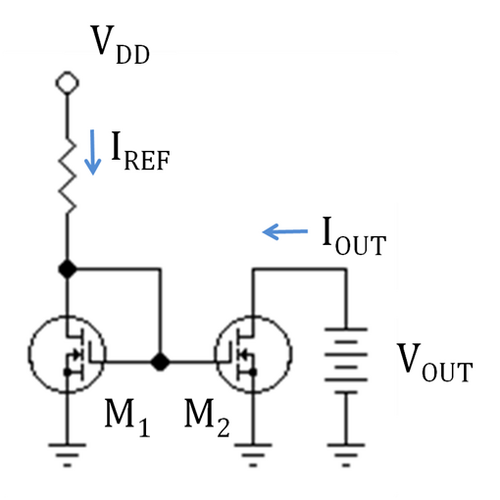
两管尺寸不同时，电流按尺寸缩放：I_OUT = I_REF·(W/L)₂/(W/L)₁（TAMU L8）。Wikipedia 特别指出，输出电流与 W 成线性关系，所以要得到 I_REF 的整数倍，改宽度就行（Wikipedia: Current mirror）。实际电路里，一个二极管管子往往同时驱动多个输出管，每个输出管按自己的比例复制。
它和理想电流源有四点不同（Wikipedia: Current mirror）：
- 交流输出阻抗有限，也就是 Rout 不是无穷大。
- 只在"顺从范围"（compliance range）内工作。输出电压太低时，输出管会掉出饱和区。
- 寄生电容限制它的频率响应。
- 它对噪声、电源和工艺容差敏感。
对熟悉逻辑的人，可以这样理解【推断】：逻辑看一个管子开和关两个状态；电流镜让管子一直停在饱和区的某个偏置点上，靠"同一个 V_GS 产生同一个电流"这条物理关系工作。所以凡是让两管在同一 V_GS 下电流不同的工艺因素，都会直接变成电流镜的误差：VT 偏差、迁移率差异、应力差异、VDS 不同。
为什么到处都用：模拟电路靠电流做事
【常识】电流镜有两大基本用途：提供偏置电流和做有源负载（Wikipedia: Current mirror）。用电流镜偏置还能降低电路对 VDD、VT 和 μCox 的敏感度（TAMU L8）。展开来看：
| 用途 | 电流镜在里面做什么 | 精度看什么 | 证据 |
|---|---|---|---|
| 偏置分配 | 一个主基准电流扇出到全芯片的多个镜像，给每个模块供偏置 | 比例误差、远距离分配时的 IR 压降 | 【推断】常用电流而不是电压做长距离分配，避免地线压降带来误差 |
| 有源负载 | 差分对、OTA 的负载，替代电阻，把单级增益提到约 gm·ro 量级 | Rout（决定增益）、两侧匹配（决定失调） | 共源级带电流源负载时增益 = −gm1/(go1 + go2)（TAMU L8）【常识】 |
| 尾电流源 | 差分对、比较器的尾部电流 | Rout（决定 CMRR） | 【常识】 |
| 电流舵 DAC | 每个单元电流源就是一个镜像输出管 | 单元间匹配决定 INL/DNL | Pelgrom 面积缩放与并联单元用于 IDAC，代价是面积和电容（Sheikholeslami, IEEE SSC Magazine）【常识】 |
| PLL 电荷泵 | UP/DN 两路电流由镜像产生 | UP/DN 失配 | 【推断】失配会造成静态相位偏差和参考杂散 |
| 自偏置电流基准 | PMOS 镜与 NMOS 镜接成环（beta multiplier） | 对电源不敏感，但必须有启动电路 | （US 7,755,419）【厂商】 |
后面每一节的电路图里都能找到电流镜：§2 的五管 OTA 有两个，§3 的 CMOS bandgap 有 PMOS 镜，§4 的电荷泵和 §5 的电流舵 DAC 本身就是电流镜阵列。
变体：用电压余量换输出电阻
为什么要有变体。 【常识】简单镜像的 Rout 只有 ro。输出电压一变，输出电流就跟着变（这就是 CLM），这会降低放大器增益，也会造成比例误差。提高 Rout 的办法都是在输出管上方再"叠"一个管子，或者加反馈。代价是输出端需要更高的最低电压，也就是余量（headroom）。在 1 V 左右的先进节点上，余量是最稀缺的资源（增益与余量的取舍详见技巧页）。
下面这张真实的原理图把四种 NMOS 镜像画在了一起，每种都带 50 µA 偏置源和标注的器件尺寸。它来自一门开源模拟设计课程，用的是 IHP SG13G2 130 nm 器件。
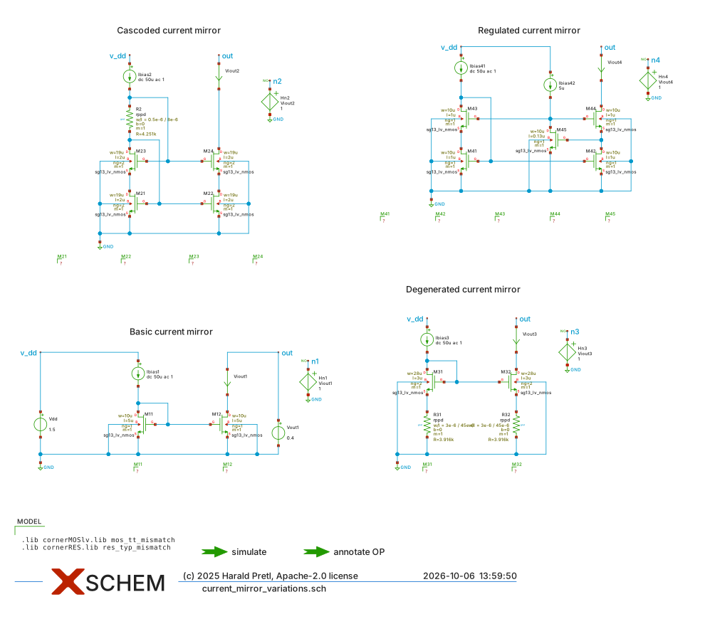
| 变体 | Rout（量级） | 最低输出电压（余量） | 优点 | 缺点 | 来源 |
|---|---|---|---|---|---|
| 简单镜像 | ≈ ro | ≈ V_DSAT，约 0.1–0.4 V | 最简单，余量最小 | Rout 低；两管 VDS 不等时有 CLM 误差 | TAMU L8【常识】 |
| Cascode（自偏置） | ≈ gm·ro² | ≈ VT + 2V_OV；讲义示例工艺中约 0.9–1.5 V | Rout 高；下层两管 VDS 自动对齐 | 多吃掉一个 VT 的余量 | TAMU L8【常识】 |
| 宽摆幅 / 低压 cascode | ≈ gm·ro² | ≈ 2V_DSAT | 保住 Rout，同时省掉一个 VT；约 3 V 以下的设计常用 | 需要一路单独的 cascode 偏置电压，偏置要设计准 | TAMU L8；UTK L06；Wikipedia: Wilson【常识】 |
| Wilson（3 管 / 4 管） | MOS 版 ≈ gm·ro²/2 | ≈ VT + 2V_OV，输入端约 2V_GS，并随 √I 上升 | 靠负反馈提高 Rout；4 管版能对齐 VDS | 输入、输出电压都高，3 V 以下难用 | Wikipedia: Wilson；UTK L06【常识】 |
| Regulated（增益增强）cascode | ≈ (1 + A)·gm·ro²，可达几十到几百 GΩ | ≈ V_GS + V_DSAT | Rout 最高 | 多一个放大器：面积、功耗、稳定性；简单版不保证两侧 VDS 相等 | TAMU L8；UTK L06【常识】 |
| 源极退化 | ≈ ro·(1 + gm·R_S) | ≈ V_DSAT + I·R_S | 降低对 VT 失配的敏感度 | 吃掉 I·R 的余量；精度转而依赖电阻匹配 | Wikipedia: Current mirror；Rout 公式【常识】 |
几点说明：
- Cascode 最低电压的公式在讲义的 PDF 提取中有乱码。表中用的是教科书标准结果 VT + 2V_OV。
- UTK 讲义中 Wilson 和 regulated cascode 的部分公式也有提取乱码，表里只取量级。
- 自偏置 cascode 的输出电压下限是"V_GS + V_DSAT"。宽摆幅 cascode 用一路额外偏置，把下层管压到饱和边缘（VDS ≈ V_DSAT），这样就省掉了一个 VT（TAMU L8）。
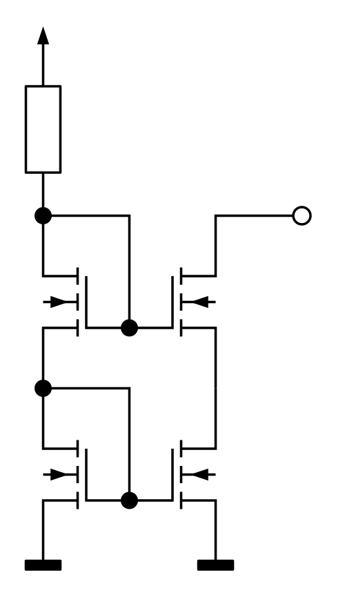
Wilson 镜像的历史与特点。 【常识】它由 Tektronix 的 George R. Wilson 在 1967 年提出，起因是和 Barrie Gilbert 的一次"挑战"。它用负反馈而不是退化来提高输出阻抗；BJT 版本的输出阻抗比简单镜像高约 50 倍。4 管改进版多加一个二极管连接的管子，让匹配对的 VDS 相等，从而去掉一阶 CLM 误差（Wikipedia: Wilson current mirror）。
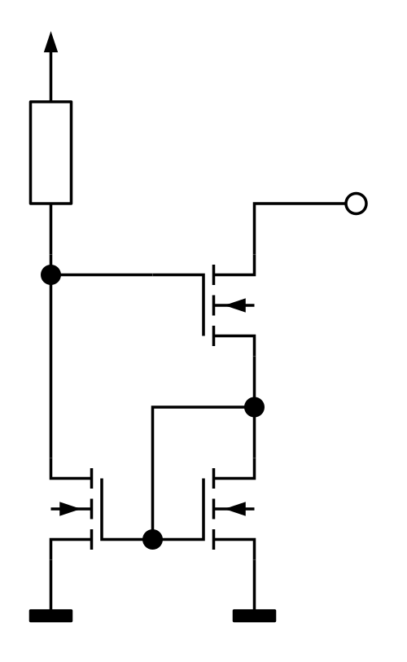
Regulated cascode 的思路。 【常识】放大器检测下层管的漏电压，并驱动 cascode 管的栅，把这个电压钉住。这样 Rout 再乘上一个放大器增益 A。MOS 版的 Rout 会随 A 继续上升；BJT 版则受 β 限制，有上限（Wikipedia: Current mirror）。
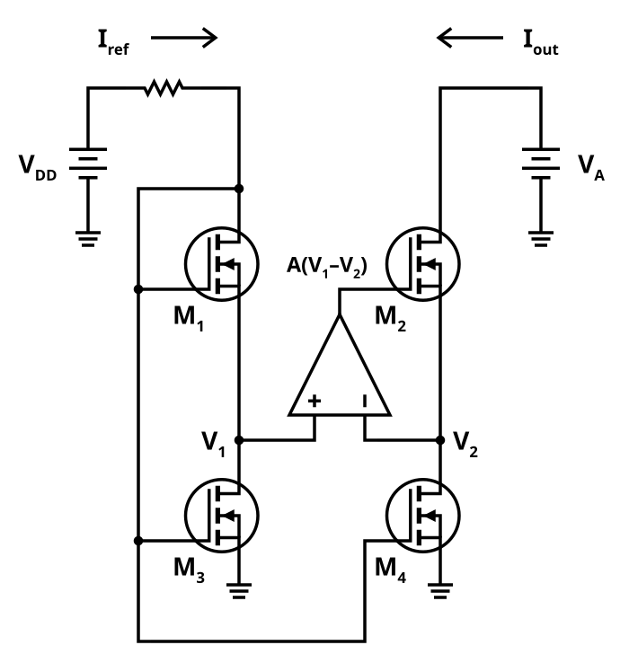
宽摆幅 cascode 在 2006 年和 2013 年仍有相关专利获得授权，说明它在工业界一直在用（US 8,450,992；US 7,012,415）【厂商】。
误差从哪来：系统误差、随机失配和环境差异
第一类：VDS 不等加 CLM，属于系统误差。 【常识】饱和区的电流并不是完全平的。VDS 越高，有效沟道越短，电流越大。二极管连接的 M1 的 VDS 等于 V_GS，而 M2 的 VDS 由负载决定，两者一般不相等。误差约为 λ₂V_DS2 − λ₁V_DS1。对策有两个：让两管 VDS 相等（cascode、4 管 Wilson 就是在做这件事），以及用长管，因为误差大致按 1/L 下降（TAMU L8）。Wikipedia 还提醒，λ·VDS 这种简单模型只对"相当老"的工艺准确，λ 一般要从实测数据里取（Wikipedia: Current mirror）。
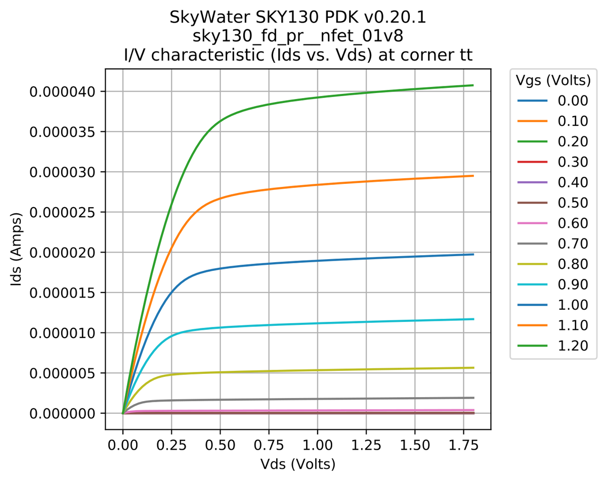
第二类：VT 和 β 的随机失配。 Pelgrom 等人的结论是：σ(ΔVT) = AVT/√(WL)，主要来源是耗尽层里的随机掺杂涨落，尺寸波动和界面态也有贡献（Pelgrom, Tuinhout, Vertregt, IEDM 1998）【硅片·研究】。直观的数字【常识】（Sheikholeslami）：
- 在该文的偏置下，相邻两管 5 mV 的 VT 差会造成约 5% 的电流差。
- L 不变、W 变为 4 倍，σ(ΔVT) 减半。
- N 个相同器件并联，VT 方差降为 1/N，代价是面积和电容。
讲义给出的实际比例误差约为 0.5–2%，"通常"与栅面积成反比（TAMU L8）【常识】。Wilson 镜像页面给出的 CMOS VT 偏差"典型为 1 到 3 mV"（Wikipedia: Wilson）【常识】。AVT 的工艺物理和各节点的数值详见主指南的"噪声与失配"一节。
注意：电流镜要的是"高过驱动"，差分对要的是"低过驱动"。 【推断】用平方律可以推出随机电流失配的近似式：σ²(ΔI/I) ≈ σ²(Δβ/β) + (gm/ID)²·σ²(ΔVT)。强反型下 gm/ID = 2/V_OV，所以 V_OV 越大（gm/ID 越低），VT 失配换成的电流误差越小。这与 Wikipedia 的说法一致：要把 VT 偏差的贡献压到约 1%，需要"零点几伏"的过驱动（Wikipedia: Wilson）。差分对的输入失调电压正好相反：输入等效失调里 VT 项直接出现，β 项要除以 gm/ID，所以差分对偏向高 gm/ID（弱或中等反型）。同一个工艺的 AVT，在电流镜和差分对里要用相反的偏置策略去"稀释"。这个式子是标准推导，本页没有找到逐字出处。
第三类：梯度、IR 压降与版图相关效应（LDE）。 Pelgrom 等人列出的其他因素有：器件间距离、形貌、金属覆盖、注入条纹、封装和机械应力（Pelgrom et al.）【硅片·研究】。Pulsic 补充了阱边距离会改变 VT，以及注入方向使器件方向变得重要（Pulsic）【厂商】。一篇基于商用 12 nm FinFET 工艺的论文指出，在单元级别，互连电阻占主导，源线电阻不匹配会直接改变电流比例（Sharma et al., NSF PAR）【仿真】。
把这些误差翻译成逻辑工艺整合熟悉的语言【推断】：
- VT 失配：随机掺杂、金属栅功函数颗粒度。
- β 失配：迁移率与应力差异、LER 与 fin 宽度波动。
- 系统误差：LOD/SA-SB、WPE、gate cut 和 diffusion break 的邻近效应、poly/fin 密度、共享源线的 IR 压降、热梯度和自热。
这些都对应熟悉的工艺旋钮。区别在于，逻辑关心它们对 Ion/Ioff 分布的影响，电流镜关心的是两个相邻器件之间的差。
版图怎么画：让两个管子"看到的世界"完全一样
原则只有一句： 匹配的器件要在几何、方向、偏置和温度上设计得完全相同（Pelgrom et al.）【硅片·研究】。Pulsic 把它拆成可执行的规则（Pulsic）【厂商】：
- 单元化。 匹配器件用同一套参数化单元。不要拿一根宽管去匹配几根窄管。大器件拆成很多相同的单元。
- 共质心。 把参考管放在中心，或者用 cross-quad 排法。Cross-quad 对任意方向的梯度都更鲁棒，但更难布线。
- 叉指。 用叉指排列让两组器件尽量分散，互相穿插。
- 同向。 所有匹配器件朝同一方向，因为注入方向有影响。
- 环境一致。 保护环、到阱边的距离都要一致。先进工艺还强制要求 dummy 和密度控制。
- 布线的取舍。 为了好布线而让电流方向关于对称轴翻转，可能损害匹配。
下面是 SkyWater 官方给出的一个多 finger NFET 版图。它不是电流镜，但展示了模拟器件的基本"单元"：多根栅 finger 共享源漏，四周有衬底接触。
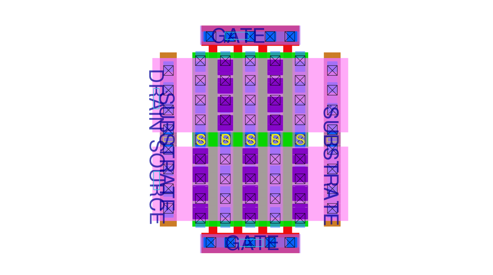
共质心在实际中是什么样？开源模拟版图工具 ALIGN 给出了一个抽象的摆放网格。
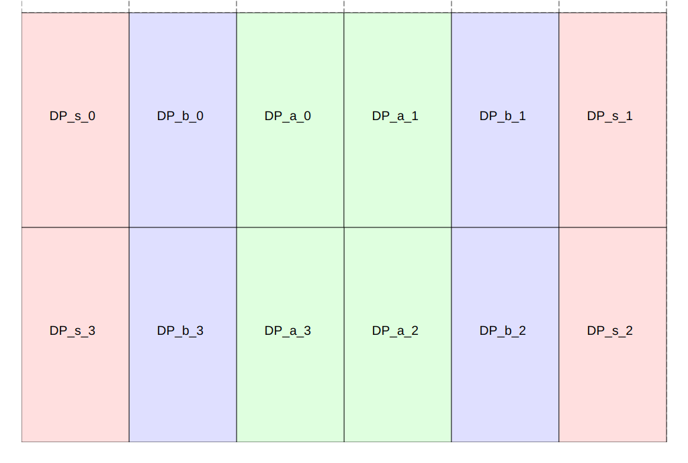
同样的思路用在电流镜上：参考管和各个输出管都拆成相同单元，交错排列在一个接近正方形的阵列里，两侧再加 dummy 列。前面那篇 12 nm FinFET 论文就是这么做的。它还额外交换单元来抵消二阶（非线性）梯度，并要求匹配器件有相同的 SA/SB（LOD）、相同的阱间距（WPE）、相同数量的 diffusion break、统一的 OD 宽度和 poly 间距（Sharma et al.）。论文报告的结果是【仿真】：
- 一个 10 器件电流镜阵列的最大电流比偏差为 1.54%，而两种对比方法分别为 21.89% 和 26.35%。
- 另一个阵列为 −0.25%，对比方法为 −5.00% 和 −8.25%。
- 最大 IR 压降为 1.7 mV，对比方法为 3.7–4.0 mV。
这说明在 FinFET 里，同样的器件，摆法和连线不同，比例误差可以差一个数量级。
FinFET/GAA 带来的变化：宽度变成整数，环境变成主角
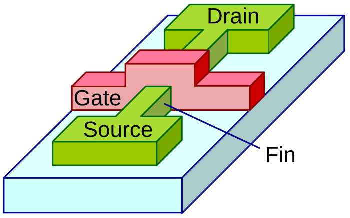
Tech Design Forums 转述的 Synopsys 网络研讨会内容总结了 FinFET 对模拟设计的影响（Tech Design Forums）【观点】：
- 宽度量子化：驱动能力靠并联共用栅、源、漏的 fin 来设定，BSIM-CMG 用 fin 数代替 W。
- 应力型 LDE：阵列中间的 fin、行末的 fin 和孤立的 fin 表现不同；缺少支撑的 fin 会应力释放，迁移率下降。Dummy fin 能维持应力，但要花面积。
- 自热问题更突出。
- 体偏置不再是实用的模拟调节手段。
- 平面工艺的模拟版图一般要从头重画。
- 好消息是：FinFET 沟道不需要重掺杂，VT 波动更小。
落到电流镜的具体做法【推断】（业界常规做法，上面的来源只部分证实）：
- 比例一律用整数个相同单元实现（相同 nfin、相同 finger 数、相同 L），不靠画不同的宽度。例如 1:4 的镜像就是 1 个单元对 4 个单元。
- 需要长 L 时，把多个最小 L 的栅串起来（stacked gates），因为单根器件的 L 基本固定。串联叠管的增益与匹配细节见技巧页。
- 到了 GAA（nanosheet），"宽度"旋钮变成 sheet 宽度或 sheet 层数，同样是有限的几档。
- 电流镜阵列做成带 dummy 行列的共质心单元网格，规则允许时尽量用连续扩散区。
- 匹配环境的清单更长：gate cut 和 diffusion break 的位置、fin 边界、背面供电带来的 IR 和寄生变化，都要在两侧做得一样。
FinFET 下的 fin 边界与镜像版图仍是专利和 CAD 会议的活跃题目（US 12,446,321；DATE 2021；ASP-DAC 2022）【厂商】。nanosheet 电流镜匹配的公开定量数据，本次没有找到。
2. 差分对、放大器与比较器
差分对放大两个输入之差、抑制两者共有的部分；加上电流镜负载和尾电流源就成了最基本的放大器（OTA），再加一级就是两级运放；把差分对接到一个正反馈锁存器上，就成了比较器。
要点：
- 三种单管接法各有分工【常识】：共源（CS）放大电压，增益约 gm·ro；共栅（CG）输入阻抗低（≈ 1/gm），常用作 cascode；共漏（CD）是增益小于 1 的电压缓冲。
- 带电流源负载的共源级增益 = −gm1/(go1 + go2)，二极管连接负载约 1/gm，加 cascode 把输出电阻再乘约 gm·ro（TAMU L8）【常识】。
- 五管 OTA = 差分对 + 电流镜负载 + 尾电流源。两级运放再加一级共源放大和补偿电容，换来更高的增益和摆幅。
- 放大器看增益、GBW、相位裕度、压摆率、失调、噪声；比较器看失调、速度、噪声、回踢（kickback）和亚稳态【常识】。
- 低电压下怎么拿回增益（cascode、gain boosting、多级、叠管），详见技巧页。
差分对：只放大"差"
【常识】差分对是两个源极连在一起的管子，下面接一个尾电流源。两个输入相等时，尾电流平分；输入有差值时，电流向一边倾斜，差值被放大。两个输入一起升降（共模信号）时，尾电流源"顶住"总电流，输出基本不变。这就是共模抑制比（CMRR）的来源，尾电流源的 Rout 越高，CMRR 越好。带电流镜负载的差分对是入门模拟课程的标准内容（Harvard ES154 Lecture 15）。
差分对的关键缺陷是失调：两管不匹配时，输入为零输出也不为零。它对 VT 失配最敏感，所以版图上要用共质心和 dummy（§1），偏置上偏向高 gm/ID（§1 的"注意"）。差分对还要关注 1/f 噪声。
五管 OTA：一个差分对、两个电流镜
下面是一张真实的五管 OTA 原理图，取自开源课程。图里能直接看到两个电流镜：上面的 PMOS 镜做有源负载，下面的 NMOS 镜给出尾电流。
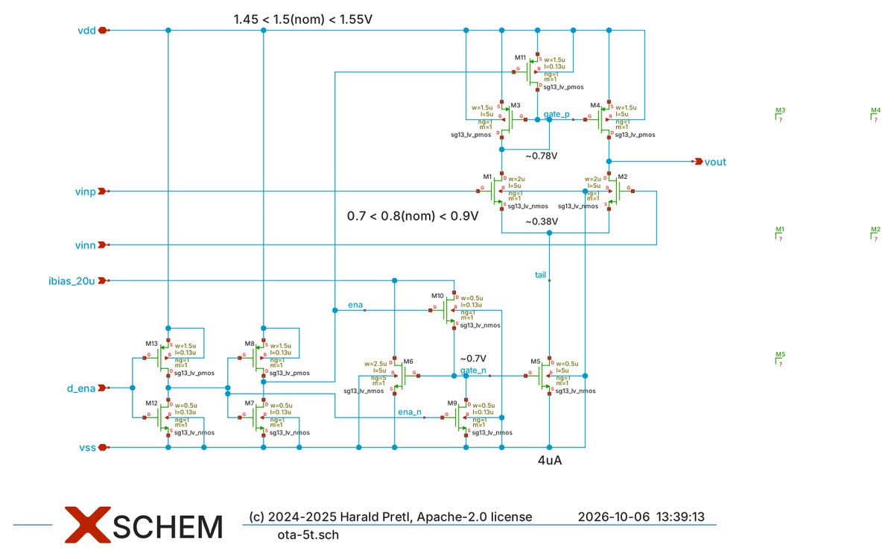
【常识】PMOS 镜负载有一个巧妙之处：它把左侧的电流变化"复制"到右侧，使两边的信号电流在输出端相加，这样单端输出也能拿到完整的差分增益。OTA 输出的是电流（跨导放大器），增益约为 gm·(ro_n ∥ ro_p)，也就是 gm·ro 的量级。在先进节点上单管 gm·ro 只有几十，这一级增益往往不够，详见技巧页。
两级运放：再加一级换增益和摆幅
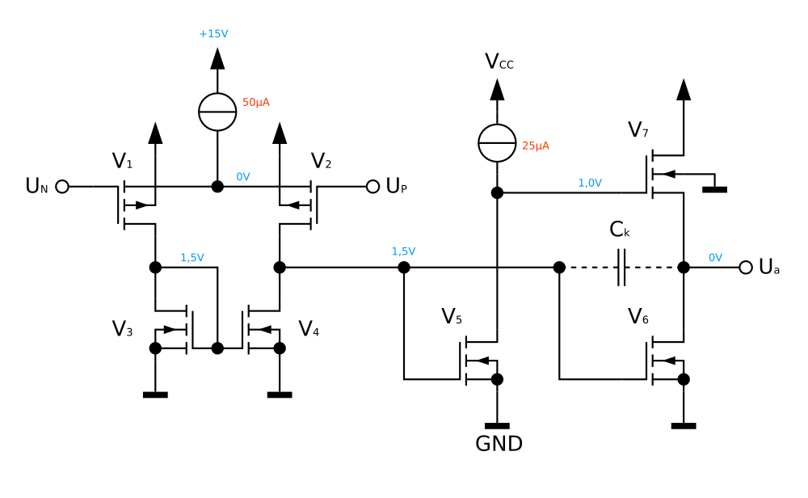
【常识】第一级是五管 OTA，第二级是一个共源放大。总增益约为两级增益相乘，即 (gm·ro)² 量级；输出摆幅也更大。代价是多了一个极点，需要补偿电容（Miller 补偿）来保证相位裕度。所以两级运放的典型指标是：直流增益、GBW、相位裕度、压摆率和输出摆幅。
| 放大器类型 | 结构 | 增益量级 | 主要取舍 | 证据 |
|---|---|---|---|---|
| 五管 OTA | 差分对 + 镜像负载 + 尾电流源 | gm·ro | 简单、快；增益低 | 【常识】 |
| 套筒 / 折叠 cascode | 在一级里叠 cascode | (gm·ro)² | 增益高；套筒式摆幅小，折叠式摆幅大但功耗和噪声更高 | 【常识】 |
| 两级 Miller | OTA + 共源第二级 + Cc | (gm·ro)² | 增益和摆幅都高；需要补偿，带宽受限 | 【常识】 |
比较器：放大以后"一锤定音"
比较器只回答一个问题：哪个输入更大。现代 ADC 和 SerDes 接收机多用动态锁存比较器，只在时钟边沿工作，静态功耗接近零。
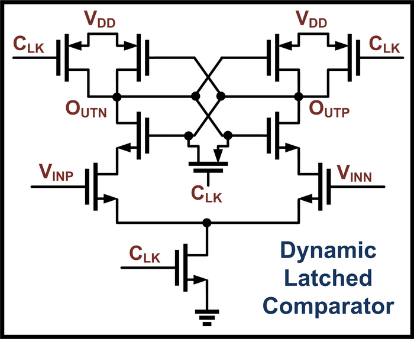
【常识】工作过程分两拍。时钟低时，复位管把两个输出拉到同一电位。时钟高时，尾管导通，输入对把电流按输入差值分给两侧，锁存器用正反馈把微小的差值放大到满摆幅。主要指标是：
- 失调：由输入对和锁存器的失配决定，是 SAR ADC 精度的关键。
- 速度：由再生时间常数决定，与 fT 相关。
- 噪声：决定能分辨的最小差值。
- 回踢：时钟翻转时耦合回输入端的毛刺。
- 亚稳态：输入差值太小时，规定时间内判决不完。
3. 基准与电源：bandgap 和 LDO
Bandgap 用两个随温度变化方向相反的电压相加，得到约 1.2 V、几乎不随温度变化的基准电压；LDO 用这个基准和一个误差放大器，把有噪声的输入电源整理成干净、稳定的局部电源。
要点：
- Bandgap 把一个 PTAT 电压（两个结在不同电流密度下的 ΔV_BE）加到一个 CTAT 二极管电压（约 −2 mV/K）上，抵消一阶温度系数，得到约 1.2–1.3 V（Wikipedia: Bandgap voltage reference）【常识】。
- 典型的初始误差约 0.5–1.0%，温漂 25–50 ppm/°C，精心设计可到 1.5–2.0 ppm/°C（Wikipedia: Bandgap）【常识】。
- LDO = 调整管 + 误差放大器 + 基准 + 电阻分压反馈。压差（dropout）是能维持稳压的最小输入输出电压差（Wikipedia: Low-dropout regulator）【常识】。
- LDO 的关键指标是压差、PSRR、静态电流、负载 / 线性调整率、瞬态响应和稳定性（Wikipedia: LDO）【常识】。
- 自偏置电流基准（beta multiplier）对电源不敏感，但必须配启动电路（US 7,755,419）【厂商】。
Bandgap：一个上升、一个下降，加起来不变
【常识】二极管或 BJT 的 V_BE 随温度下降，约 −2 mV/K，叫 CTAT（与绝对温度互补）。两个结在不同电流密度下的 V_BE 之差 ΔV_BE 随温度线性上升，叫 PTAT（与绝对温度成正比）。把 PTAT 放大到合适的倍数再和 CTAT 相加，一阶温度系数就相互抵消。结果约等于硅的带隙电压外推值，1.2–1.3 V（Wikipedia: Bandgap）。历史上，Hilbiber（Fairchild，1964）、Widlar（1971）和 Brokaw（1974）先后奠定了这个电路（Wikipedia: Bandgap）。
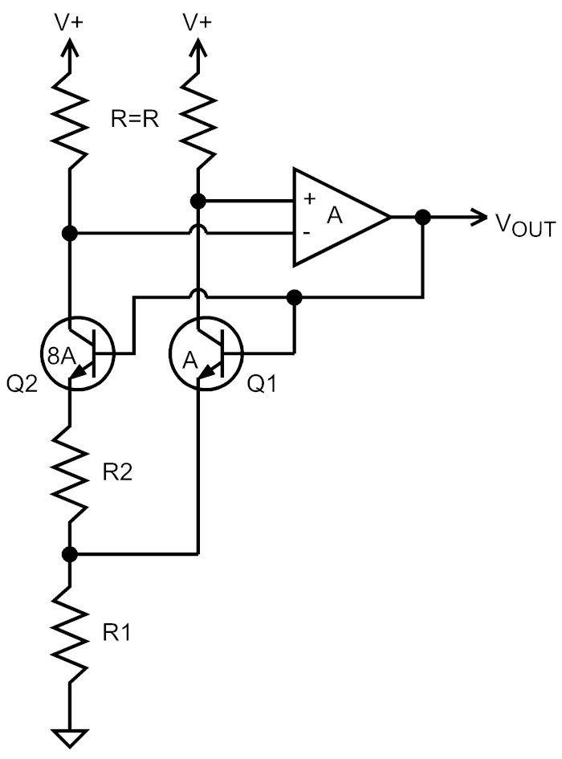
在 CMOS 工艺里，BJT 来自寄生的纵向 PNP。实际电路还要加电流镜、cascode 和启动电路。
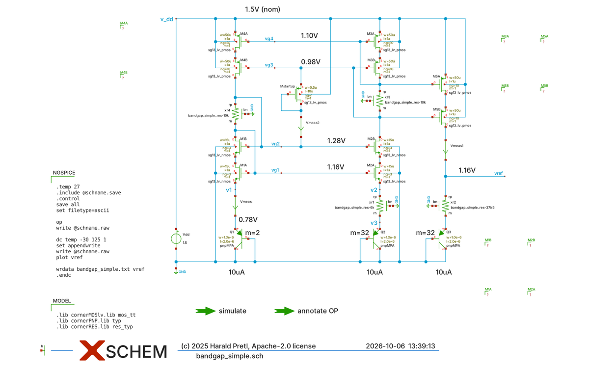
【常识】Bandgap 的指标有：初始精度、温漂、PSRR、噪声和最低电源电压（Wikipedia: Bandgap）。
- 简单的一阶设计在 100 °C 范围内大约只能做到 20 ppm/°C。
- 标准结构需要约 1.4 V 电源。
- Banba 等人在 1999 年报告了电流求和型的亚 1 V CMOS bandgap。
器件层面要关注 BJT/二极管的匹配、电阻温度系数和运放失调。运放失调会被放大到输出端，所以常用斩波（chopping）或修调（trim）。修调值一般存在 OTP 里，见 §8【常识】。
电流基准：beta multiplier 与启动电路
【厂商】自偏置电流基准由一个 PMOS 镜和一个 NMOS 镜接成环，其中一个 NMOS 是另一个的 K 倍并在源极串电阻，得到基本与电源无关的电流。这个环路还有一个"零电流"的稳定状态，所以"自偏置基准几乎总是和启动电路一起使用"（US 7,755,419）。低压 cascode 版本的启动电路设计也有专利（US 8,598,862）。§6 的版图图里就有一个"Beta multiplier current reference"模块。
LDO：用一个放大器"盯住"输出电压
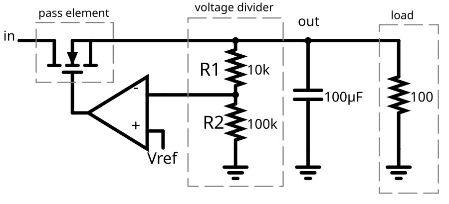
【常识】LDO 的组成和工作原理很简单。难点在指标之间的平衡（Wikipedia: LDO）：
- 压差：受调整管饱和压降限制。压差越小，效率越高，但调整管要越大。
- PSRR：对输入纹波的抑制。例如 1 MHz 下 55 dB 的 PSRR 把 1 mV 纹波衰减到 1.78 µV。
- 调整率：线性调整率随直流环路增益提高而改善。
- 静态电流：LDO 自身消耗的电流。
- 瞬态响应：由误差放大器带宽、输出电容和 ESR 决定。
- 稳定性：有主极点，还有一个依赖 ESR 的零点。
和开关电源比，LDO 没有开关噪声、不需要电感，但会把 (V_in − V_out)·I 全部变成热，压差越大效率越低（Wikipedia: LDO）。所以 SoC 里常见的做法是：开关电源（片外或片上 buck）做大幅降压，LDO 给敏感的模拟和时钟模块做"最后一级清洁"【推断】。TI 的应用笔记 SLVA079 系统解释了 LDO 的术语（TI SLVA079，仅链接）。
电源树：从基准到每个模块
【推断】把本节串起来，SoC 的模拟电源与偏置大致是一棵树：bandgap 给出基准电压 → 偏置发生器（beta multiplier 或由 bandgap 派生的电流，再经电流镜扇出）→ 多个 LDO 和 buck → 各个模拟模块（PLL、ADC、SerDes）。上电时还要有 POR，保证电源稳定之前芯片处于复位状态（§8）。树根的精度和噪声会传到每一片叶子，所以 bandgap 常被修调，LDO 的 PSRR 也被当成时钟抖动预算的一部分。
4. 时钟：PLL
锁相环（PLL）把一个低频、稳定的参考时钟（通常来自晶振）"乘"成芯片需要的高频时钟，并让输出相位一直跟着参考走；它是几乎每颗 SoC 都必备的模拟 IP。
要点：
- 电荷泵 PLL = 三态鉴频鉴相器（PFD）+ 电荷泵 + PI（R-C）环路滤波器 + VCO，反馈路径上有分频器。它锁定快，稳态相位误差小（Wikipedia: Charge-pump PLL）【常识】。
- 主要指标是抖动 / 相位噪声、参考杂散、锁定时间和频率范围【常识】。
- VCO 分环形（ring）和 LC 两类。厂商数据中，环形 PLL 积分抖动"低至 1 ps RMS"，LC PLL 宽带抖动"明显低于 300 fs RMS"（AnySilicon: Silicon Creations）【厂商】。
- 数据率越高，抖动预算越紧，越倾向用 LC PLL。例如 PCIe Gen2/3 用环形 PLL，Gen4/5 用 LC PLL（SemiWiki: Analog Bits）【厂商】。
结构：五个方块组成一个反馈环
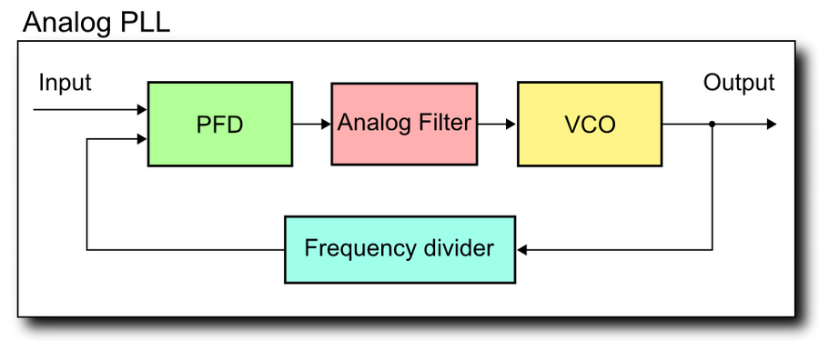
【常识】环路怎么工作：
- PFD 比较参考时钟和分频后的反馈时钟，输出"UP"或"DN"脉冲，脉宽代表相位差。
- 电荷泵把 UP/DN 脉冲变成往环路滤波器里"灌"或"抽"的电流。它本质上是两路电流镜加开关（§1）。
- 环路滤波器把电流积分并滤波，得到 VCO 的控制电压。
- VCO 的频率随控制电压变化。
- 分频器把 VCO 输出除以 N 送回 PFD。分频比可以是整数（integer-N），也可以用 Δ-Σ 调制得到分数（fractional-N）。
PFD 和分频器是数字电路，电荷泵、环路滤波器和 VCO 是模拟电路。PLL 是典型的混合信号模块。
指标与器件依赖
| 指标 | 意思 | 主要受什么影响 | 证据 |
|---|---|---|---|
| 抖动 / 相位噪声 | 时钟边沿偏离理想位置的程度 | VCO 噪声（含 1/f 噪声上变频）、参考噪声、环路带宽 | 【常识】 |
| 参考杂散 | 输出频谱在参考频率整数倍处的毛刺 | 电荷泵 UP/DN 电流失配、漏电 | 【推断】 |
| 锁定时间 | 从启动或跳频到锁定所需时间 | 环路带宽 | 【常识】 |
| 捕获 / 保持范围 | 能锁定、能维持锁定的频率范围 | 环路结构 | hold-in、pull-in 范围是 CP-PLL 的定义指标（Wikipedia: CP-PLL）【常识】 |
【常识】器件层面：环形 VCO 依赖器件速度（fT）和 1/f 噪声；LC VCO 依赖电感 Q 值和变容管。电荷泵依赖电流镜匹配和 Rout。PLL 抖动、杂散和电荷泵失配的公开定量数据，本次没有找到。
环形 PLL 与 LC PLL：用面积和设计难度换抖动
【厂商】Silicon Creations 的目录可以作为一份现成的 PLL 分类表（AnySilicon: Silicon Creations）：
- 环形 PLL 一类：带 24 位 Δ-Σ 调制器的小数分频 PLL、核心电压下的小型环形 PLL、整数 PLL、抖动衰减 PLL、12/16/32 相输出的多相 PLL。工艺覆盖 180 nm 到 3 nm。
- LC PLL 一类：带 LC 谐振腔的整数 LC-PLL、28 nm 小数分频频率合成器。列出的节点是 7 nm FinFET 和 28 nm。
该公司称其小数分频 PLL 有超过 1,000 个量产授权、部署在超过 600 万片晶圆上。PLL 的用途包括数字时钟生成、DDR/PCIe/以太网/USB PHY 的参考时钟、快速跳频、扩频调制和微度级相位步进（Design & Reuse 新闻稿）。
【推断】环形 VCO 主要由反相器和电流源构成，更"数字化"，跟随节点缩放较容易，所以能从 180 nm 一直做到 3 nm。LC VCO 依赖电感，面积大，对金属层和衬底很敏感，换节点更难。
PLL 的近亲：DLL、晶振和 CDR
【常识】
- DLL（延迟锁相环）：把一条延迟线锁定到参考周期上，用于存储器 PHY 里 DQS 和时钟的相位对齐。它不产生新频率，也不累积抖动。Synopsys 的 DDR PHY 资料里就列出了"低抖动 DLL"（Synopsys DDR multiPHY）【厂商】。
- 晶体振荡器：一个 Pierce 型放大器 pad 单元，驱动片外石英晶体，给 PLL 提供参考。
- CDR（时钟数据恢复）：在 SerDes 接收端从数据流里恢复时钟，本质上也是一个相位锁定环路。
5. 数据转换：ADC 和 DAC
ADC 把连续的模拟电压变成数字码，DAC 反过来；不同架构在速度、精度和功耗之间做不同的取舍，而它们的精度最终都落在比较器、电容或电流源的匹配上。
要点：
- SAR ADC 用二分查找，每个时钟周期定一位，由采样保持、一个比较器、一个 DAC 和逐次逼近寄存器组成（Wikipedia: ADC）【常识】。
- Δ-Σ ADC 用过采样和噪声整形把量化噪声推到带外，后接数字抽取滤波器，适合低带宽、高精度应用（Wikipedia: ADC）【常识】。
- Flash 最快，但每多一位比较器数量几乎翻倍；pipeline 介于两者之间（Wikipedia: ADC）【常识】。
- 主要指标是 ENOB、SNR、SFDR、DNL/INL 和孔径抖动；理想 16 位 ADC 的 SQNR 约为 98 dB（6.02N + 1.76 dB）（Wikipedia: ADC）【常识】。
- 电流舵 DAC 的精度由电流镜单元的匹配决定（Sheikholeslami）【常识】。
SAR ADC：一个比较器做二分查找
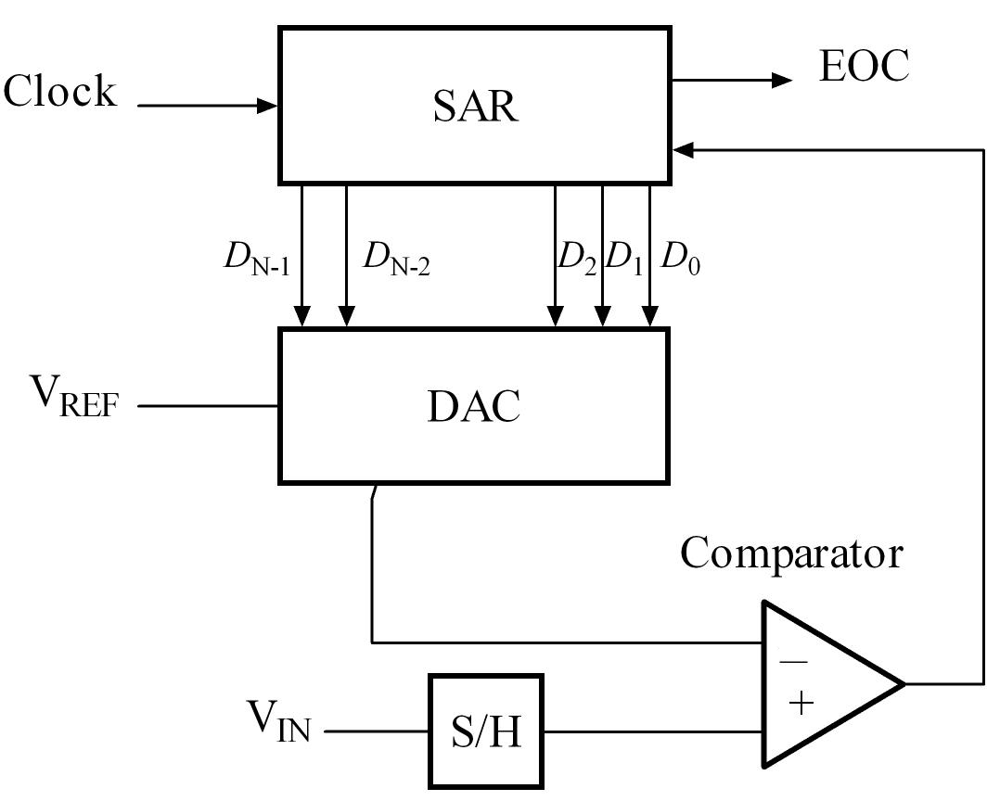
【常识】SAR 的过程像称重：先试最高位（满量程的一半），比较器告诉你"大了还是小了"，定下这一位，再试下一位。
在 SoC 里，SAR 的 DAC 多用二进制加权的电容阵列（电荷再分配），电容要按共质心排布；比较器就是 §2 的动态锁存比较器。所以 SAR 的精度依赖三样东西：比较器的噪声和失调、电容匹配、采样开关的导通电阻和漏电。SAR 几乎是"最数字化"的 ADC：除了比较器和采样开关，其余都是逻辑。所以它在先进节点上很受欢迎【推断】。
【常识】速度和精度的典型范围（Electronic Design）：SAR 通常覆盖 8 到 18 位。转换时间等于时钟周期乘以位数，例如 16 位、2 MHz 时钟需要 8 µs。该文引用的约 10 MS/s 上限针对的是分立 ADC 芯片，不是嵌入式 IP。
Δ-Σ ADC：用速度换精度
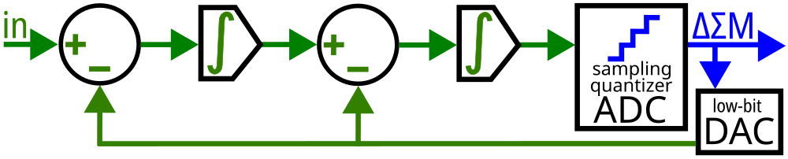
【常识】Δ-Σ ADC 由调制器（积分器 + 比较器 + 1 位 DAC 组成的反馈环）和后面的数字抽取滤波器组成。它以远高于信号带宽的速率采样，把量化噪声推到带外，适合低带宽、高精度的应用，例如 24 位/96 kHz 音频（Wikipedia: ADC）。它最高可达 32 位，输出速率一般在 kS/s 量级，适合直流、音频和精密仪器（Electronic Design）。器件层面，积分器里的运放 / OTA 和 1/f 噪声是关键，所以常配斩波。连续时间 Δ-Σ 还对时钟抖动敏感【常识】。
架构对照与 DAC
| 架构 | 原理 | 擅长 | 精度瓶颈 | 证据 |
|---|---|---|---|---|
| Flash | 电阻梯 + 一排比较器 + 优先编码器 | 最快 | 比较器数量随位数指数增长；比较器失调 | Wikipedia: ADC【常识】 |
| SAR | 二分查找，每周期一位 | 中速、中高精度、低功耗 | 比较器噪声与失调、电容匹配 | Wikipedia: ADC【常识】 |
| Pipeline | 每级粗量化、DAC 相减、放大余差交给下一级 | 高速且较高精度 | 运放增益与 GBW、电容匹配 | Wikipedia: ADC【常识】 |
| Δ-Σ | 过采样 + 噪声整形 + 数字抽取 | 低带宽、高精度 | 积分器运放、1/f 噪声、时钟抖动 | Wikipedia: ADC【常识】 |
| 电流舵 DAC | 一组单元电流源按码开关 | 高速 | 电流镜单元匹配（INL/DNL）、Rout（SFDR） | Sheikholeslami【常识】 |
| R-string DAC | 电阻梯抽头 | 天然单调 | 电阻匹配 | 【常识】 |
【常识】指标解释（Wikipedia: ADC）：
- ENOB：等效有效位数，用实测 SNDR 折算成"相当于几位理想 ADC"。
- SNR / SQNR：信噪比；理想 N 位 ADC 的量化 SQNR 约为 6.02N + 1.76 dB，16 位约 98.1 dB。
- SFDR：无杂散动态范围；时间交织 ADC 的通道失配会恶化 SFDR。
- DNL / INL：每个码宽和整条传输曲线偏离理想的程度，直接反映电容或电流源的匹配。
- 孔径抖动：采样时刻的不确定性，在 1 MHz 到 1 GHz 带宽之间限制分辨率。所以高速 ADC 的精度最终取决于 PLL 的抖动（§4）。
ADC 品质因数（Walden/Schreier FoM）和 Murmann 的 ADC 性能综述是公开的标准参考，本次没有逐条核读。
6. 版图长什么样
模拟版图是手工（或半自动）画出的定制版图：器件按匹配要求成组摆放，大面积给电容、电阻和电感，布线讲究对称和电流密度；它和数字的标准单元自动布局布线是两种完全不同的东西。
要点：
- 器件层面的匹配规则（单元化、共质心、dummy、同向）见 §1 的版图小节。
- 模块层面，无源元件常常占大部分面积：补偿电容、电阻和电感比晶体管大得多。
- 真实的开源版图里能直接认出 OTA、电流基准和电容阵列这些模块。
- 版图画完不是结束：还要做 DRC/LVS、寄生提取和版图后仿真，见 §9。
一个两级运放的版图：大电容占了大块面积
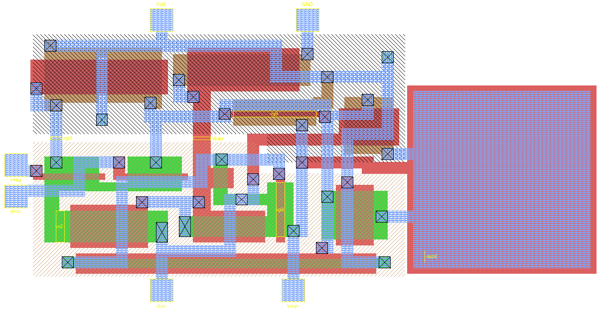
【推断】从图里能读出模拟版图的几个习惯：
- 晶体管通常成组、成对摆放，便于匹配。
- 电源和地走宽线，以控制 IR 压降和电迁移。
- 补偿电容、采样电容和 DAC 电容阵列往往占据模块的大部分面积。
- 电容和晶体管之间留出间距，以减少耦合。
一块小型模拟测试芯片：模块在版图上的样子
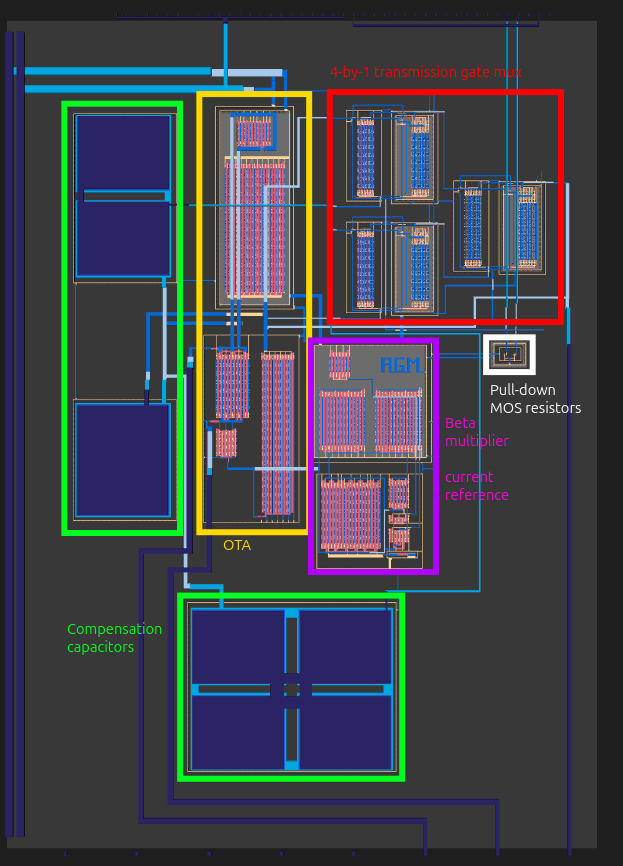
这个项目通过 Tiny Tapeout 流片，GDS 和原理图都开源（atenfyr/ttsky_analog；Tiny Tapeout 芯片页）。另一个 Tiny Tapeout 项目把一个五管 OTA 做成 25 µm × 20 µm 的单元：上面是 n 阱里的 PMOS 镜像负载，中间是 NMOS 输入对，下面是 NMOS 尾电流镜（spasquale25/OTA）。这正好对应 §2 那张五管 OTA 原理图的结构，不过两者来自不同作者和不同工艺。
模拟版图和数字版图差在哪
| 方面 | 数字（标准单元） | 模拟（定制） | 证据 |
|---|---|---|---|
| 生成方式 | 综合 + 自动布局布线 | 手工或模板 / 生成器辅助，逐器件摆放 | 【常识】 |
| 主要目标 | 时序、面积、功耗、可布通 | 匹配、对称、寄生、噪声隔离、电流密度 | 【常识】 |
| 器件 | 固定尺寸的标准单元 | 每个器件单独定尺寸；大量无源元件 | 【常识】 |
| 匹配手段 | 基本不需要 | 共质心、叉指、dummy、同向、环境一致 | Pulsic【厂商】 |
| 隔离 | 一般不需要 | 保护环、深 N 阱、与数字噪声源保持距离 | 【常识】 |
| 版图后检查 | STA 用提取后的 RC | 版图后仿真全套指标；先进节点要更多提取角 | Semiconductor Engineering【观点】 |
自动化正在进入模拟版图。开源工具 ALIGN 能自动生成共质心摆放（§1 的图）；OpenFASOC 的 gLayout 能用 SKY130 和 GF180 生成电流镜、差分对、共质心和叉指结构，以及两级运放（OpenFASOC gLayout）。商用方面见 §9 的迁移自动化。
7. 模拟电路的主要组成部分：从晶体管到子系统
模拟和混合信号电路是分层搭起来的：晶体管级原语组成电路模块，电路模块组成子系统，子系统以 IP 的形式进入 SoC；每一层都只依赖下一层的少数几个指标，而这些指标最终都追溯到少数几个器件参数。
要点：
- 原语层：电流镜、差分对、共源 / 共栅 / 共漏。模块层：OTA / 运放、比较器、基准、LDO。子系统层：PLL、ADC/DAC、SerDes、电源管理、传感器【常识】。
- 组合关系很具体：LDO = bandgap + 误差放大器 + 调整管 + 分压器；SAR ADC = 采样保持 + 比较器 + 电容 DAC + SAR 逻辑；电荷泵 PLL = PFD + 电荷泵 + 环路滤波器 + VCO + 分频器（Wikipedia: LDO；Wikipedia: ADC；Wikipedia: CP-PLL）【常识】。
- 器件依赖可以归成五类：放大器看 gm/ID、gm·ro、fT；比较器、基准和数据转换器看匹配；VCO、LNA 和 ADC 前端看噪声；bandgap 看 BJT/二极管；电源器件看 Ron·C 和可靠性【推断】。
- 逻辑工艺的趋势对模拟有利有弊：VDD 降低压缩余量，宽度量子化限制尺寸自由度；fT 提高有利于 RF 和 SerDes，FinFET 无掺杂沟道改善 VT 匹配【推断】。
一张总表：每个模块干什么、看什么、靠什么
下表行内容为教科书标准知识（Razavi、Johns & Martin、Gray & Meyer、Allen & Holberg、Baker），没有逐行找到网页出处，统一标为【常识】。
| 层级 | 模块 | 干什么 | 关键电路指标 | 依赖的器件指标 |
|---|---|---|---|---|
| 原语 | 电流镜 | 复制或缩放电流 | Rout、顺从电压、比例误差 | 匹配（AVT、Aβ）、ro、LDE |
| 原语 | 差分对 | 放大差值、抑制共模 | 失调、CMRR、gm | 匹配、gm/ID、1/f 噪声 |
| 原语 | 共源 / 共栅 / 共漏 | 电压放大 / 电流缓冲（cascode）/ 电压缓冲 | 增益、带宽、输入输出阻抗 | gm/ID、gm·ro、fT、Cgd |
| 放大器 | OTA、套筒 / 折叠 cascode、两级运放 | 放大 | 增益、GBW、相位裕度、压摆率、摆幅 | 本征增益、余量 |
| 判决 | 比较器（静态 / 动态锁存） | 1 位判决 | 失调、速度、回踢、噪声、亚稳态 | 匹配、fT、1/f 噪声 |
| 基准 | bandgap、电流基准 | 稳定的电压 / 电流 | 精度、温漂、PSRR、噪声、最低 VDD、启动 | BJT/二极管匹配、电阻 TC、运放失调 |
| 电源 | LDO、buck、电荷泵、POR | 稳压、变压、上电复位 | 压差、PSRR、Iq、效率、纹波、阈值精度 | 调整管 Ron、功率管 Ron·Qg、可靠性（HCI/TDDB）、VT 分布 |
| 数据转换 | SAR、pipeline、Δ-Σ、电流舵 DAC、R-string DAC | 模拟 ↔ 数字 | ENOB、SNR、SFDR、INL/DNL | 比较器噪声、电容 / 电阻 / 电流源匹配、开关 Ron 与漏电、运放增益 |
| 时钟 | VCO、PLL、DLL、晶振、CDR | 产生、对齐、恢复时钟 | 相位噪声、抖动、杂散、锁定时间 | 1/f 噪声上变频、fT、电感 Q |
| 接口 | SerDes、I/O、ESD | 高速收发、对外接口、静电保护 | BER、眼图、HBM/CDM 等级 | fT/fmax、gm/C、厚氧器件、回滞特性、击穿电压 |
| 传感 | 温度传感器、PVT 监控 | 测温度、电压、工艺速度 | 修调后的精度 | BJT/二极管、器件速度、VT 分布 |
| 滤波 | 开关电容、Gm-C / 有源 RC | 滤波、采样保持、积分 | 带宽、线性度、kT/C 噪声 | 电容匹配、开关电荷注入、gm 线性度 |
| RF | LNA、混频器、PA | 低噪放大、变频、功率发射 | NF、IIP3、输出功率、效率 | fT/fmax、栅电阻、击穿电压、热 |
组合的例子：一个模块拆开是什么
电荷泵 PLL【推断】：PFD（数字）+ 电荷泵（UP/DN 电流镜 + 开关）+ 环路滤波器（R、C）+ VCO（环形或 LC）+ 反馈分频器（数字）。电荷泵的 UP/DN 镜像失配会造成静态相位偏差和参考杂散。这是 §1 的电流镜误差直接影响 PLL 性能的一个例子。
SAR ADC【推断】：自举采样开关 + 电容 DAC（单位电容阵列，共质心排布）+ 动态比较器（差分对 + 锁存）+ SAR 逻辑（数字）+ 参考电压缓冲（类似一个 LDO）。
LDO【推断】：bandgap + 误差放大器（一个 OTA）+ 调整管 + 分压器 + 补偿。
SerDes 的一条通道（lane）【推断】：发送端（串行器 + 驱动器 + FFE 均衡）+ 信道 + 接收端（CTLE + DFE 比较器 + CDR）+ 共享 PLL。
一个规律【推断】：越往上，数字逻辑占的比例越高。现代 PLL、SAR ADC 和 SerDes 里，真正的模拟部分往往只剩采样开关、比较器、VCO、电荷泵和前端放大器，其余都交给数字逻辑和校准。这也是这些 IP 能跟着先进节点走的原因。
SerDes：芯片之间的高速公路
【常识】SerDes 把芯片里的宽并行数据压成一两根差分线上的高速串行数据，到对端再还原。发送端有驱动器和前馈均衡（FFE）；接收端有连续时间线性均衡（CTLE）、判决反馈均衡（DFE）和时钟数据恢复（CDR），旁边是 PLL。主要指标是误码率（BER）、眼图张开度和每比特能耗。器件层面最看重 fT/fmax 和 gm/C。
【厂商】Silicon Creations 的 SerDes PMA 覆盖 PCIe、JESD204B/C、CPRI、10G-KR 等 30 多种协议，工艺从 180 nm 到 4 nm（AnySilicon: Silicon Creations）。SerDes 的数字部分（PCS 和控制逻辑）常以软核 RTL 交付；以 PCIe Gen4 为例，接口是约 1 GHz 的 16 位总线，时序要由集成方收敛（Rambus 博客）。
I/O 与 ESD：芯片的"门"和"保险丝"
【常识】I/O 单元包括焊盘驱动器和接收器，通常用厚氧器件承受更高的接口电压。ESD 保护包括二极管、接地栅 NMOS（GGNMOS）或 SCR，以及电源轨之间的箝位（rail clamp），用来泄放人体模型（HBM）和充电器件模型（CDM）放电。ESD 器件看的是回滞（snapback）特性、击穿电压、导通电阻，以及它给信号引脚增加的面积和电容。高速接口的 ESD 尤其难做，因为保护器件的电容直接吃掉带宽。ESD 和 I/O 单元结构本次没有找到专门的公开来源。
【厂商】在存储器 PHY 里，I/O 和模拟是一体的：Synopsys 的 DDR PHY 资料列出了可编程驱动强度和 ODT、ESD 保护、PVT 补偿的 I/O、低抖动 DLL，以及动态漂移检测与补偿（Synopsys DDR multiPHY）。
传感器与监控：芯片的"体检"
【常识】片上温度传感器通常用 PTAT 的 ΔV_BE（与 bandgap 同源），再用 Δ-Σ 或 SAR ADC 数字化，精度靠修调。PVT 监控包括测量工艺速度的环形振荡器和检测电源跌落的 droop 检测器。
【厂商】厂商把这些归为独立的 IP 类别：
- Agile Analog 设有"IC 健康与监控"子系统（温度传感器、IR 压降传感器）和"安全"子系统（电压毛刺传感器、温度传感器）（Embedded Computing Design）。
- Synopsys 把 PVT 传感器归入"芯片生命周期管理（SLM）IP"，与接口 IP 和基础 IP 并列（Synopsys 新闻稿）。
给逻辑工艺工程师的翻译
【推断】模拟关心的器件性质，很多是逻辑优化不太看的：
- 本征增益 gm·ro：随 L 缩短而下降，FinFET 里靠叠栅缓解。
- 1/f 噪声、匹配（AVT）、ro 和 DIBL。
- LDE。
- 无源元件：MOM/MIM 电容密度与匹配、电阻温度系数与匹配、电感 Q。
逻辑工艺的趋势对模拟的影响：
- VDD 降低：余量变小，深度 cascode 叠不起来。
- 宽度量子化：尺寸自由度变小。
- fT 提高：有利于 RF 和 SerDes。
- FinFET 无掺杂沟道：VT 匹配变好。
这些器件指标的定义、提取方法和各节点数据详见主指南。
8. 模拟 IP：每颗芯片都要用的那些
几乎每颗 SoC 都要一组"基础模拟 IP"（时钟、基准、稳压、复位、监控、I/O 与 ESD、OTP），再按产品加上高速 PHY 和数据转换器；这些 IP 一般以绑定某个工艺的 GDS 硬核授权，所以"某个节点上有没有现成的、硅验证过的模拟 IP"常常决定了芯片能选哪个节点和哪家代工厂。
要点：
- 必备层：PLL、晶振 pad 或片上 RC 振荡器、bandgap、POR、LDO、PVT/温度传感器、带 ESD 的 GPIO、OTP/eFuse【推断】（依据：Agile Analog、Analog Bits、Synopsys 的目录反复出现同一组）。
- 按应用选：SerDes（PCIe/以太网/CXL）、DDR/LPDDR/HBM PHY、UCIe/BoW 裸片互连、USB/MIPI、高精度 ADC/DAC、LC PLL【推断】。
- 软核与硬核：数字 IP 一般是可综合的 RTL，基本与工艺无关；模拟和混合信号 IP"一般以硬核开发和授权"，即特定工艺的 GDS，不能改到别的工艺（AnySilicon）【观点】。
- 移植难："往往需要从头实现"；从 28 nm 到 16 nm 是"完全不同的设计"（Synopsys 博客；Semiconductor Engineering）【厂商】【观点】。
- "有没有 IP"影响选厂：有公司会根据可用的 IP 来决定用哪家代工厂、哪个节点（Semiconductor Engineering）【观点】。
目录：每个 IP 干什么、是否必备、看什么指标
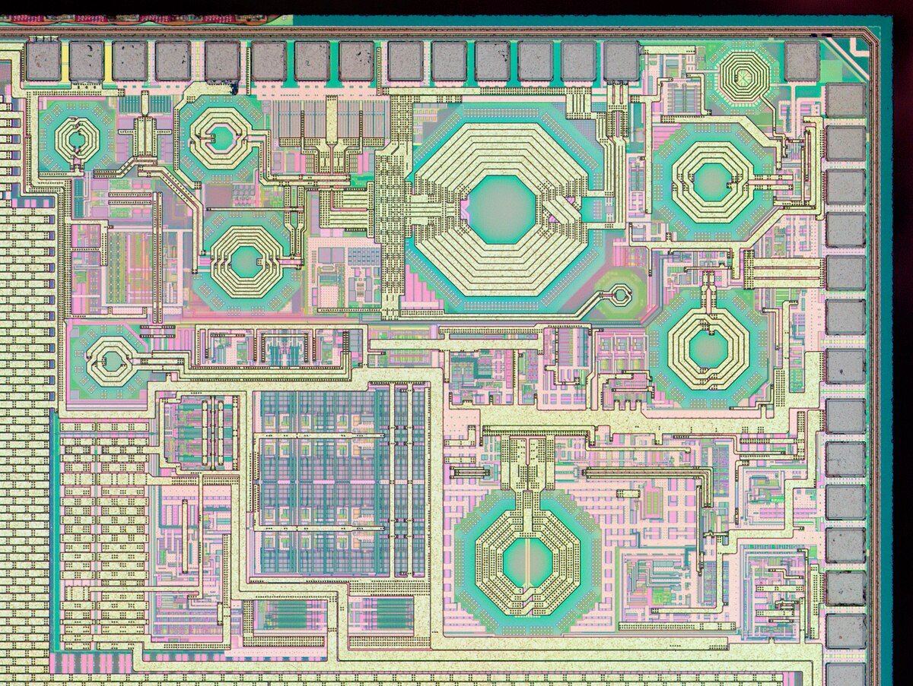
| IP | 干什么 | 必备 / 按应用 | 关键指标 |
|---|---|---|---|
| PLL（环形，小数分频） | 为核心、总线和 PHY 生成时钟 | 必备【推断】 | 抖动（环形"低至 1 ps RMS"【厂商】）、频率范围、锁定时间、面积功耗（AnySilicon） |
| LC PLL | 给高速 SerDes 提供低抖动时钟 | 按应用【推断】 | 抖动（"明显低于 300 fs RMS"【厂商】）（AnySilicon） |
| 晶振 pad / RC 振荡器 | PLL 参考；常开域、看门狗、低功耗时钟 | 必备【推断】 | 频率精度、启动、功耗；RC 振荡器无需外部元件（AnySilicon）【厂商】 |
| Bandgap | 稳定的电压基准 | 必备【推断】 | 初始精度、温漂、PSRR、噪声 |
| LDO | 局部稳压，给敏感模块供干净电源 | 必备【推断】 | 压差、PSRR、Iq、瞬态响应 |
| POR / 掉电检测 | 电源稳定前保持复位；运行中电源下跌时报警 | 必备【推断】 | 阈值精度、响应时间 |
| PVT / 温度 / IR 压降传感器 | 监控芯片健康，支持调频调压 | 必备【推断】（Synopsys 把它列为 SLM IP【厂商】） | 测量精度、转换时间 |
| 电压毛刺传感器 | 检测故障注入攻击 | 按应用（安全）【厂商】 | 检测阈值、响应速度（Embedded Computing Design） |
| GPIO + ESD | 对外接口与静电保护 | 必备【常识】 | 驱动能力、电压等级、HBM/CDM 等级 |
| OTP / eFuse / antifuse | 存储修调值、密钥、ID、配置 | 必备【推断】 | 可靠性、面积、读出安全性（Synopsys OTP）【厂商】 |
| SerDes（PCIe/以太网/CXL） | 芯片间高速串行通信 | 按应用（数据中心、网络、AI） | BER、眼图、pJ/bit、协议合规 |
| DDR/LPDDR/HBM PHY | 连接外部 DRAM | 按应用（有外部 DRAM 时） | 数据率、时序余量、功耗；内含 DLL 与校准 I/O（Synopsys DDR）【厂商】 |
| UCIe / BoW / AIB | chiplet 之间的裸片互连 | 按应用（chiplet 设计） | 带宽密度（Tb/s/mm）、pJ/bit、距离 |
| USB / MIPI | 外设、摄像头、显示接口 | 按应用（客户端、手机、摄像头） | 协议合规、功耗 |
| ADC / DAC | 传感器接口、音频、无线基带 | 按应用（中低精度 SAR 也常见于 MCU）【推断】 | ENOB、采样率、功耗 |
【厂商】OTP 的补充：它是"电源上升时第一个开始工作的电路"，因为其他模拟模块要先从里面读出修调值（Synopsys OTP）。eFuse 靠电迁移熔断金属，在 FinFET 上面积大、漏电高，熔断的连线还可能"长回来"。antifuse 靠氧化层击穿，不需要额外掩模，SEM 也难读出。这份资料来自 antifuse 厂商，对 eFuse 的比较有立场。
【厂商】UCIe 的两种封装规格（Synopsys UCIe 技术简报）：
| 参数 | 先进封装 | 标准封装 |
|---|---|---|
| 数据率 | 16 Gb/s | 16 Gb/s |
| 每模块通道数 | 64 | 16 |
| 凸点间距 | 45 µm | 110 µm |
| 带宽密度 | 5.2 Tb/s/mm | 0.9 Tb/s/mm |
| 能效 | 0.3 pJ/bit | 0.5 pJ/bit |
| 距离 | ≤ 2 mm | ≤ 25 mm |
| 修复用冗余通道 | 有 | 无 |
厂商目录给出的分组
【厂商】厂商目录给出了一个实际的分组方式：
| 来源 | 分组 / 内容 |
|---|---|
| Agile Analog（Embedded Computing Design） | 常开（Always-On）：低功耗 RC 振荡器、低功耗 bandgap、可编程比较器、POR、小型数字单元库 |
| 电源：LDO、POR、IR 压降传感器、bandgap | |
| 健康与监控：温度传感器、IR 压降传感器 | |
| 安全：电压毛刺传感器、温度传感器 | |
| 传感器接口：8/10 位 SAR ADC、8/10 位 DAC、比较器 | |
| 无线接口：SAR ADC、DAC、RC 振荡器、LDO | |
| Analog Bits，GF 12LP/12LP+（SemiWiki） | 整数与小数 PLL、PCIe Gen2/3 环形 PLL、PCIe Gen4/5 LC PLL、PVT 传感器、POR |
| Analog Bits，Samsung 32LP–5LPE（同上） | 低功耗 PLL、PCIe 参考时钟、片间 I/O、时钟收发、振荡器 pad、PVT 传感器、电源毛刺检测、多协议 SerDes |
| Synopsys，Intel 18A/18A-P（新闻稿） | 224G 以太网、PCIe 7.0、UCIe、USB4 PHY；基础 IP（嵌入式存储器、逻辑库、I/O）；PVT 传感器 |
Samsung 的一场演讲把基础模拟 IP 称为"AI SoC 的关键差异化因素"（SemiWiki）【厂商】。AnySilicon 列出的典型模拟 / 混合信号硬核是 SerDes、PLL、ADC、DAC，以及 DDR 和 PCIe 的 PHY 层；它们对应的数字部分（DRAM 控制器、以太网 MAC、AMBA 总线 IP）通常是软核（AnySilicon）【观点】。
模拟 IP 和数字 IP 有什么不同
| 方面 | 数字 IP | 模拟 / 混合信号 IP | 证据 |
|---|---|---|---|
| 交付形式 | 软核：可综合 RTL（SystemVerilog/VHDL），有时是通用门级网表 | 硬核：特定工艺的 GDS 版图 | AnySilicon【观点】 |
| 与工艺的关系 | "一般与工艺无关"，后端 P&R 可映射到任何工艺 | 绑定一套 PDK，"不能为不同工艺定制" | Semiconductor Engineering；AnySilicon【观点】 |
| 集成方怎么用 | 自己综合、布局布线、收敛时序 | 把 GDS 直接放进最终版图，按规则接电源、信号和 ESD | AnySilicon【观点】 |
| 换节点 | 重新综合、布局布线、签核，用新的标准单元库 | 重新设计、重新版图、重新仿真、重新流片验证 | Synopsys 博客【厂商】；【推断】 |
| 角落覆盖 | 主要靠重新表征的标准单元 .lib | IP 自己要跑 PVT、蒙特卡洛和寄生角 | 【推断】 |
| 主要风险 | 验证覆盖率和时序收敛 | 定制版图、版图后再调中心、硅片表征 | 【推断】 |
| 对节点选择的影响 | 小 | 大：IP 是否就绪会影响选哪个节点和代工厂 | Semiconductor Engineering【观点】 |
| 物理位置 | 芯片里任意位置 | 高速 PHY 必须放在芯片边缘（"beachfront"） | Semiconductor Engineering【观点】 |
为什么模拟 IP 移植难
【厂商】Synopsys 说，模拟迁移"可能是手工的、耗时的，并且需要深入理解电路功能"，而且"往往需要从头实现"。在更小的节点上，LDE、寄生、电迁移和应力都在增加，所以 FinFET 节点上只做版图前仿真是不够的（Synopsys 博客）。
【观点】2014 年的一篇行业访谈给出了更具体的原因（Semiconductor Engineering）：
- Synapse Design 的 Hem Hingarh 谈 FinFET："fin 宽度对 VT 有显著影响"。还有 fin 数量子化、寄生 R/C 改变、Miller 电容大、接触电阻和自热。"必须从头开始，甚至要扔掉一些经验法则。"寄生提取角"增加到了大约 15 到 20 个"，仿真时间随之变长。
- Cadence 的 Kevin Yee 说，从 28 nm 到 16 nm 是"完全不同的设计"。28 nm 时 PDK 从 v1.0 开始，到 16/14/10 nm 时从 v0.3/0.5 开始，也就是说 IP 要对着不成熟的模型设计。
- Synopsys 的 Navraj Nandra 说，模拟 IP"必须放得进 SoC 的 beachfront"，而且新协议和数字缩放都要求重做架构，所以"与其说是复用，不如说是一开始就做对"。
【推断】对逻辑工艺整合来说，结论是：一个新节点的模拟 IP 什么时候就绪，取决于模拟器件模型什么时候成熟，而不只取决于逻辑 PPA。这些模型包括按 fin / sheet 数给出的 VT 与失配、flicker 噪声、LDE/应力、自热，以及薄金属的 EM 规则。模型每变一次，模拟 IP 就要重新签核、重新验证。
代工厂的 IP 生态与质量评分
【厂商】代工厂用 IP 联盟和质量评分来管理这件事：
- TSMC OIP IP Alliance：提供"硅验证、量产验证、特定于代工厂"的 IP。页面称有来自 40 家联盟成员的数万个 IP 选项，截至 2023 年 8 月超过 60,000 个 IP。硬核 IP 在测试芯片流片前要经过物理审查和流片前评估（含设计套件和设计余量审查）；主要 IP 有测试芯片流片审查；流片后基于测试芯片表征报告做典型和分批（split-lot）硅片评估。结果以 TSMC9000 评分发布，"通过的评估越多，可信度越高"；TSMC9000A 增加车规评估（TSMC IP Alliance）。
- Samsung SAFE：截至 2023 年 6 月，IP 合作方包括 Synopsys、Cadence 和 Alphawave Semi，为 3–8 nm 工艺新增"数十个"IP（Samsung 新闻稿）。
- Intel Foundry：Synopsys 加入了 Intel Foundry Accelerator 设计服务联盟，并是 chiplet 联盟的创始成员（Synopsys 新闻稿）；Cadence 也宣布了 18A/18A-P 的设计 IP（Design & Reuse，仅检索摘要）。
【推断】split-lot（快 / 慢片）硅片报告是工艺偏差在模拟余量上暴露出来的地方。所以"在角落批次上硅验证过"是商业上的前提条件，不只是良好实践。
9. 一个模拟 IP 由什么组成：前端、后端与交付物
一个模拟 IP 要经过"规格 → 架构 → 晶体管级原理图 → 版图前仿真 → 定制版图 → 物理验证 → 寄生提取与版图后仿真 → 可靠性检查 → 测试芯片与硅片表征"这条链，最后以一个硬核包交付：GDS、LEF 抽象、数字引脚的 Liberty、行为模型、网表、验证报告、集成指南和硅片表征报告。
要点：
- Cadence 的基本流程是：规格 → 原理图 → 版图前仿真 → 版图 → DRC/LVS → 寄生提取 → 版图后仿真 → GDSII 流片，且反复迭代（Cadence 社区博客）【厂商】。
- 先进节点上后端更重：寄生提取角更多，还要查自热、接触电阻、fin 量子化、EM 和应力（Semiconductor Engineering；Synopsys 博客）【观点】【厂商】。
- 流片到硅片回来要"几个月"；之后才开始表征和调试（Rambus 博客）【厂商】。
- 交付物的各个部分都有公开来源证实（Liberty、SDC、IBIS-AMI、GDS、表征报告），但没有一份公开文件列全，完整清单属于【推断】。
- 迁移工具能自动做原理图映射和版图模板复用，厂商称快"最多 3 倍"或省下"数周"，但硅片验证仍在关键路径上（Business Wire / Cadence；Synopsys / Design & Reuse）【厂商】。
从规格到硅片验证：流程表
| 阶段 | 做什么 | 产出 | 证据 |
|---|---|---|---|
| 1. 规格 | 定性能、功耗、面积、接口、工作条件（电压、温度范围） | 规格书 | Cadence 博客【厂商】 |
| 2. 架构 | 选拓扑（例如环形还是 LC PLL、SAR 还是 Δ-Σ），分配误差与功耗预算；常用行为模型做系统仿真 | 架构文档、行为模型 | 【推断】 |
| 3. 原理图 | 晶体管级设计，按 gm/ID 等方法定尺寸 | 原理图、符号 | Cadence 博客【厂商】 |
| 4. 版图前仿真 | 典型与 PVT 角、蒙特卡洛失配、噪声、稳定性、瞬态 | 仿真报告；设计余量 | Cadence 文章本身没写角落和蒙特卡洛；PVT 角下的设计调中心见 Synopsys 博客【厂商】 |
| 5. 定制版图 | 匹配摆放、保护环、对称布线、电源网格、dummy | 版图数据库 | Cadence 博客【厂商】 |
| 6. 物理验证 | DRC、LVS、ERC、天线规则 | 无违例的验证报告 | Cadence 博客【厂商】；ERC/天线【推断】 |
| 7. 寄生提取 + 版图后仿真 | 提取 R/C，重跑版图前的全部仿真；多个提取角 | 版图后仿真报告；必要时回到第 3 或第 5 步 | Cadence 博客【厂商】；Semiconductor Engineering【观点】 |
| 8. 可靠性检查 | EM/IR、自热、应力、老化 | EM/IR 与可靠性报告 | Synopsys 博客【厂商】 |
| 9. 代工厂预审 | 设计套件和设计余量审查；主要 IP 的测试芯片流片审查 | 流片前评估记录 | TSMC IP Alliance【厂商】 |
| 10. 测试芯片流片 | 把 IP 放在测试芯片上，带隔离测试路径、环回和可观测性 | GDSII / OASIS | Rambus 博客【厂商】 |
| 11. 硅片表征 | 典型片和 split-lot 片上测指标；封装、板级、插座与焊接差异 | 表征报告；已知问题列表 | TSMC IP Alliance；Rambus 博客【厂商】 |
| 12. 发布与支持 | 打包交付；支持客户集成和 bring-up | 交付包（见下表）；质量评分 | TSMC IP Alliance【厂商】 |
这条链对应前文：第 3 步用 §1–§5 的积木，第 5 步用 §1 和 §6 的版图规则，第 4 和第 7 步的蒙特卡洛就是在算 §1 的 Pelgrom 失配。
【推断】数字 IP 的对应流程是：RTL → lint 与 CDC 检查 → 功能验证（UVM、覆盖率）→ 综合到目标标准单元库 → P&R → STA 与功耗签核。模拟流程的风险集中在定制版图、版图后调中心和硅片表征；数字流程的风险集中在验证覆盖率和时序收敛。
先进节点让后端变重
【观点】Hingarh 提到，先进节点的寄生提取角增加到约 15–20 个，验证还要加上自热、接触电阻和 fin 量子化效应；IP 设计者必须在单元、模块和 IP 三个层级做"多得多的有效电路表征"（Semiconductor Engineering）。【厂商】Synopsys 的 AI 优化器在"数百个 PVT 角"上对迁移后的电路调中心（Synopsys 博客）。公开资料里没有一个权威的"标准签核角数"。
【观点】Rambus 列出了 SerDes 硅片 bring-up 的难点：实验室设备、封装与电路板审查、板与板之间的差异、插座与焊接的差异，以及"某个蒙特卡洛样本才会出现"的失效（Rambus 博客）。
交付物：一个硬核包里有什么
| 文件 | 用途 | 谁用 | 证据 |
|---|---|---|---|
| GDSII / OASIS | 最终版图，放入芯片顶层 | 集成方的版图与流片团队 | AnySilicon【观点】 |
| LEF / 抽象视图 | 引脚、阻挡区、可用布线层，供自动布局布线 | 集成方的 P&R 团队 | 【推断】 |
| Liberty（.lib/.db） | IP 数字引脚的时序弧和功耗，常需多个 PVT 角 | 集成方的 STA 与功耗签核 | Rambus 列出了硬化 AFE 与数字接口的 Liberty（Rambus 博客）【厂商】 |
| SDC 约束 | 时钟、时钟组、跨时钟域 | 集成方的综合与 STA | Rambus 博客【厂商】 |
| Verilog 行为模型；Verilog-AMS / 实数模型 | 芯片级功能仿真与混合信号验证 | 集成方的验证团队 | 【推断】；Rambus 提到支持反标门级仿真【厂商】 |
| CDL / SPICE 网表 | LVS 与晶体管级仿真 | 集成方的物理验证团队 | 【推断】 |
| DRC/LVS/ERC/天线报告 | 证明 IP 用代工厂签核规则（指定版本）检查过 | 集成方与代工厂 | 【推断】 |
| EM/IR 报告 | 证明电流密度和压降满足规则 | 集成方的电源完整性团队 | 【推断】 |
| IBIS / IBIS-AMI 模型 | I/O 与 SerDes 的信道仿真；AMI 是可执行的 TX/RX 模型，含均衡和 CDR，能仿真远多于 SPICE 的比特数 | 封装与电路板的信号完整性团队 | MathWorks【常识】 |
| 数据手册、集成与用户指南 | 平面规划、电源域、ESD 规则、禁布区、去耦、凸点与焊盘要求；时钟应用笔记 | 集成方的架构、版图和封装团队 | Rambus 的时钟应用笔记（Rambus 博客）【厂商】；其余【推断】 |
| 封装 / 电路板应用笔记 | 串扰、阻抗、偏斜、去耦、插入与回波损耗、稳压器噪声的签核标准 | 封装与电路板团队 | Rambus 博客【厂商】 |
| DFT / BIST 资料 | 环回、PRBS、数字外壳的扫描；UCIe 还包含链路训练、校准和测试修复逻辑 | 测试团队 | Synopsys UCIe【厂商】；其余【推断】 |
| 调试工具 | 眼图与冲激响应分析器 | bring-up 工程师 | Rambus 博客【厂商】 |
| 软核 RTL（PHY 的数字部分） | PCS 与控制逻辑，由集成方综合并收敛时序 | 集成方的前端团队 | Rambus 博客；DDR PHY 配软的 DFI 接口（Synopsys DDR）【厂商】 |
| 硅片表征 / 认证报告 | 典型片与 split-lot 片的实测数据；已知问题 | 集成方的选型与质量团队；代工厂评分 | TSMC IP Alliance【厂商】 |
【推断】数字软核的交付物通常是 RTL、SDC、testbench 或 VIP、综合脚本和 DFT/扫描插入指南，有时附带某个节点的硬化网表或 GDS。差别很直观：数字 IP 交付"怎么做出来"，模拟 IP 交付"已经做好的东西和怎么正确地用它"。
迁移自动化与工期：工具在加速，硅片仍是瓶颈
【厂商】主要厂商的说法：
- Cadence + TSMC（2023 年 9 月）：Virtuoso Studio 迁移流程能迁移原理图单元、参数、引脚和连线，用 ADE 重新仿真并调到规格；生成式版图技术识别旧版图中的器件组，再套用到新版图。支持 N40→N22、N22→N12、N12→N6、N6→N4、N5→N3E、N4/N5→N3E 和 N3E→N2。客户报告比手工迁移快"最多 3 倍"（Business Wire / Cadence）。
- Synopsys + TSMC（2023 年 9 月）：模拟迁移参考流程覆盖 N4P、N3E 和 N2，包含基于机器学习的原理图迁移、基于模板的版图迁移和"寄生感知、AI 驱动的优化"，称能"省下数周工程时间"（Design & Reuse / Synopsys）。Synopsys 还以"到 2030 年缺 23,000 名工程师"作为背景（Synopsys 博客）。
- Agile Analog：用 Composa 从目标 PDK 重新生成模拟 IP，代替每个工艺都要做一次的"重新设计"（eeNews Europe）。
这些数字都没有独立基准。公开资料里也没有找到"移植一个 SerDes、PLL 或 DDR PHY 需要几个月"的可靠数字。
【推断】工具能自动完成原理图映射和版图模板复用，但处理不了物理变化：fin 到 nanosheet 的宽度量子化、新的失配和 flicker 噪声模型、背面供电带来的 IR 和寄生变化、更紧的 EM 限制。所以剩下的工作集中在重新调中心和重新验证上。即使工具快 3 倍，测试芯片硅片（几个月）仍在关键路径上。"与工艺无关"的生成式方法，以及从 180 nm 做到 3 nm 的环形 PLL，都偏向更数字化、更易缩放的架构；LC 谐振腔、高精度 ADC 和 SerDes 前端仍然高度依赖节点。
10. 想看更多图：可靠的公开资料
想看更多真实的原理图、版图和裸片照片，最可靠的来源是开源 PDK 和开源课程的代码仓库（可以直接打开原始设计文件）、Wikimedia Commons（标明许可的电路图），以及少数只能链接、不能转载的课程和应用笔记。
要点：
- 开源课程和 PDK 仓库里的图是工具导出的真实设计，不是示意图，本页一半以上的图来自这里。
- Wikimedia Commons 的电路图都标了作者和许可，可以按许可转载。
- MIT OCW 是 CC BY-NC-SA（非商业），TI 应用笔记有版权：只适合链接阅读。
- 想要真实的共质心版图，目前最可行的办法是用开源生成器自己生成。
开源课程与 PDK 仓库（可下载原始文件）
- iic-jku/analog-circuit-design：Harald Pretl 的开源模拟课程，Apache-2.0。有 xschem 原理图（电流镜及其变体、五管 OTA、改进型 OTA、bandgap），用 IHP SG13G2 器件，带 ngspice 仿真设置。本页的电流镜变体、五管 OTA 和 CMOS bandgap 图都来自这里。
- google/skywater-pdk-libs-sky130_fd_pr：SkyWater SKY130 器件库，Apache-2.0。每种器件有 GDS 和官方 SVG 渲染，还有模型生成的 I–V 曲线。本页的多 finger NFET 版图和 Ids–Vds 曲线来自这里。
- SkyWater PDK 器件文档：各器件的说明，仓库里还有可复用的剖面图。
- ALIGN-analoglayout/ALIGN-public：开源模拟版图自动生成工具，BSD-3-Clause。本页的共质心摆放图来自这里。
- OpenFASOC gLayout：能用 SKY130/GF180 生成电流镜、差分对、共质心（ABBA）、叉指结构和两级运放的真实 GDS。
Tiny Tapeout：流片过的开源模拟设计
- atenfyr/ttsky_analog：Miller OTA、beta multiplier 电流基准、补偿电容、传输门多路器，带标注版图。芯片页见 Tiny Tapeout ttsky26a #520。
- spasquale25/OTA：SKY130 五管 OTA 的 GDS，25 µm × 20 µm 的单元里能看到 PMOS 镜像负载、NMOS 输入对和尾电流镜。
Wikimedia Commons：标明许可的电路图
本页用到的 Commons 图都可以在原页面看大图和许可：
- Simple MOSFET mirror、Kaskode-Stromspiegel (MOS)、Wilson-Stromspiegel (MOS)、Wide-swing MOSFET mirror
- Single Supply CMOS OpAmp、Dynamic Comparator、Brokaw cell theory、Low-dropout regulator circuit
- Analog PLL (block diagram)、SA ADC block diagram、2nd order delta-sigma modulation loop
- Vlsiopamp2（运放版图）、Doublegate FinFET、ESP32 RF 裸片
本页没有用、但值得看的同类图：
- 电荷泵电路：两个 ICP 电流源由 Up/Down 开关控制，向环路电容充放电。
- 含电荷泵的 PLL 方框图
- 电荷再分配 DAC：SAR 用的二进制加权电容阵列。
- Track-and-latch 比较器
- 带 CLM 的 MOSFET 输出特性
- CMOS LDO 裸片（Torex XC6206）、CMOS PLL 裸片（CD4046）
只能链接阅读的课程、笔记与图片站
- MIT OCW 6.012 Microelectronic Devices and Circuits：器件到基本电路，CC BY-NC-SA（非商业）。
- MIT OCW 6.776 High Speed Communication Circuits：PLL、VCO 和高速电路，CC BY-NC-SA（非商业）。
- TAMU ECEN474 第 8 讲：电流镜 和 UTK ECE532 第 6 讲：本页电流镜公式的主要出处。
- TI SLVA079：LDO 术语与定义：LDO 指标的系统解释。
- Ken Shirriff 的博客：逐个晶体管解读模拟芯片的裸片照片。
- Zeptobars：本页 ESP32 裸片照片的原始来源，有大量高清裸片照片。
Sources
展开来源列表
- Wikipedia: Current mirror
- Wikipedia: Wilson current mirror
- Wikipedia: Bandgap voltage reference
- Wikipedia: Low-dropout regulator
- Wikipedia: Analog-to-digital converter
- Wikipedia: Charge-pump phase-locked loop
- TAMU ECEN474 Lecture 8: Current Mirrors (S. Palermo)
- UTK ECE532 Lecture 06 (B. Blalock)
- Harvard ES154 Lecture 15: Differential pair
- Pelgrom, Tuinhout, Vertregt: Transistor matching in analog CMOS applications (IEDM 1998)
- Sheikholeslami: Process variation and Pelgrom's law (IEEE SSC Magazine)
- Pulsic: Current Mirrors in Analog Layout
- Tech Design Forums: How to design with finFETs
- Sharma et al.: Constructive Place-and-Route for FinFET-Based Transistor Arrays in Analog Circuits Under Nonlinear Gradients (NSF PAR)
- US 7,755,419: Low power beta multiplier start-up circuit
- US 8,598,862: Start-up circuit for cascoded beta multiplier
- US 8,450,992: Wide-swing cascode current mirror
- US 7,012,415: Wide swing, low power current mirror
- US 12,446,321: Fin boundaries
- DATE 2021 paper (FinFET analog layout)
- ASP-DAC 2022 paper 2B-3
- Electronic Design: What's the difference between SAR and delta-sigma ADCs
- AnySilicon: Silicon Creations vendor page
- Design & Reuse: Silicon Creations fractional-N PLL milestone (Nov 2024)
- SemiWiki: Analog Bits analog foundation IP on advanced FinFET processes
- Embedded Computing Design: Agile Analog releases a full set of key analog IPs
- Synopsys and Intel Foundry press release (Apr 2025)
- AnySilicon: IP core (soft vs hard IP)
- Synopsys DDR multiPHY datasheet page
- Synopsys technical bulletin: UCIe for multi-die SoCs
- Synopsys: Non-volatile memory (OTP) article
- Semiconductor Engineering: Challenges Increase For IP At Advanced Nodes (2014)
- Synopsys blog: Analog circuit design migration
- eeNews Europe: Process-agnostic analog IP tackles fab capacity challenges
- TSMC OIP IP Alliance
- Samsung Semiconductor newsroom: Expanded SAFE program (June 2023)
- Design & Reuse: Cadence IP for Intel 18A-P
- Rambus blog: Overcoming high-speed SerDes IP integration challenges, part 2
- Cadence Community blog: From schematic to silicon, a basic idea on analog IC design flow
- MathWorks: Understanding IBIS-AMI simulations
- Business Wire: Cadence custom/analog design migration flow for TSMC processes (Sept 2023)
- Design & Reuse: Synopsys and TSMC advance analog design migration (Sept 2023)
- iic-jku/analog-circuit-design (Harald Pretl)
- google/skywater-pdk-libs-sky130_fd_pr
- SkyWater PDK device details documentation
- ALIGN-analoglayout/ALIGN-public
- OpenFASOC gLayout op-amp notebook
- atenfyr/ttsky_analog
- Tiny Tapeout ttsky26a #520
- spasquale25/OTA
- Wikimedia Commons: Simple MOSFET mirror
- Wikimedia Commons: Kaskode-Stromspiegel (MOS)
- Wikimedia Commons: Wilson-Stromspiegel (MOS)
- Wikimedia Commons: Wide-swing MOSFET mirror
- Wikimedia Commons: Single Supply CMOS OpAmp
- Wikimedia Commons: Dynamic Comparator
- Wikimedia Commons: Brokaw cell theory
- Wikimedia Commons: Low-dropout regulator circuit
- Wikimedia Commons: Analog PLL (block diagram)
- Wikimedia Commons: SA ADC block diagram
- Wikimedia Commons: 2nd order delta-sigma modulation loop
- Wikimedia Commons: Vlsiopamp2
- Wikimedia Commons: Doublegate FinFET
- Wikimedia Commons: ESP32 RF die (Zeptobars)
- Wikimedia Commons: Charge pump PLL circuit
- Wikimedia Commons: PLL generic inline optional N
- Wikimedia Commons: Charge scaling DAC
- Wikimedia Commons: Track and Latch Comparator
- Wikimedia Commons: MOSFET enhancement-mode n-channel characteristics
- Wikimedia Commons: Torex XC6206 die
- Wikimedia Commons: TI CD4046BE die
- MIT OCW 6.012 Microelectronic Devices and Circuits
- MIT OCW 6.776 High Speed Communication Circuits
- TI SLVA079: Understanding the terms and definitions of LDO voltage regulators
- Ken Shirriff's blog
- Zeptobars
Overview: the building-block map of analog circuits
Start with the map: each layer is built from the blocks of the layer below, and each layer has its own metrics to watch.
Key points:
- The layers, from bottom to top: devices → transistor-level primitives → circuit blocks → mixed-signal subsystems → analog IP in the SoC.
- Moving up, the metrics shift from "device parameters" (gm/ID, gm·ro, AVT) to "system parameters" (jitter, ENOB, BER, PSRR).
- Evidence tags: [Textbook] textbook or general knowledge; [Silicon · research] measurements on research devices or research circuits; [Silicon · production platform] production process data; [TCAD] device simulation; [Simulation] circuit or layout simulation; [Vendor] vendor or foundry material and press releases; [Opinion] industry interviews; [Inference] this page's own reasoning.
| Layer | Typical blocks | What it does | Main metrics | Section on this page |
|---|---|---|---|---|
| Devices | MOSFET (planar / FinFET / GAA), BJT/diode, resistor, MOM/MIM capacitor, inductor | Provide transconductance, output resistance, matching, passives | gm/ID, gm·ro, fT, AVT, 1/f noise, resistor temperature coefficient, inductor Q | §1, §7; see the main guide |
| Transistor-level primitives | Current mirror, differential pair, common-source / common-gate / common-drain single transistor | Copy current, amplify a difference, amplify or buffer | Rout, headroom, ratio error; offset, CMRR; gain, bandwidth | §1, §2 |
| Circuit blocks | OTA / op-amp, comparator, bandgap, current reference, LDO | Amplify, decide, generate stable voltages and currents, regulate | Gain, GBW, phase margin; offset, speed; temperature drift; dropout, PSRR | §2, §3 |
| Mixed-signal subsystems | PLL / DLL, oscillator, ADC, DAC | Generate clocks; convert between analog and digital | Jitter, spurs, lock time; ENOB, SNR, SFDR, INL/DNL | §4, §5 |
| Interface, protection, and monitoring | SerDes, DDR/HBM PHY, UCIe, I/O, ESD, temperature and voltage sensors | High-speed chip-to-chip links; external interfaces; electrostatic protection; health monitoring | BER, eye diagram, pJ/bit; HBM/CDM rating; temperature accuracy | §7, §8 |
| Analog IP in the SoC | Power tree, clock tree, PHY, sensing and security blocks | Delivered and integrated as hard macros | Silicon-proven or not; available on the node or not; complete deliverables or not | §8, §9 |
1. Current mirrors: the "current copier" of analog circuits
A current mirror lets a diode-connected transistor turn a reference current into a gate-source voltage, then lets other transistors that share this voltage copy the current in proportion to their size; it appears in almost every analog block, because analog bias, loads, and many data converters all run on "precise currents."
Key points:
- The ideal ratio is I_OUT = I_REF·(W/L)₂/(W/L)₁ (TAMU ECEN474 L8) [Textbook]. In FinFET, "W" becomes fin count × finger count (Tech Design Forums) [Opinion].
- The main variants all make the same trade: spend more voltage headroom to get higher output resistance Rout. A simple mirror has Rout ≈ ro, a cascode about gm·ro², and a regulated cascode about A·gm·ro² (TAMU L8; UTK ECE532 L06) [Textbook].
- There are two kinds of error. Systematic error comes mainly from unequal VDS on the two transistors plus channel-length modulation (CLM). Random error comes from VT and β mismatch, σ(ΔVT) = AVT/√(WL) (Pelgrom et al. 1998) [Silicon · research].
- Current matching in a mirror improves at higher overdrive. This is the opposite of voltage offset in a differential pair [Inference].
- Layout requires devices that are "identical in geometry, orientation, bias, and temperature" (Pelgrom et al.). In practice this means unit cells, interdigitation, common centroid, dummies, and same orientation (Pulsic) [Vendor].
- FinFET/GAA quantizes width, and L is essentially fixed. Ratios can only come from integer numbers of identical units, LDE becomes more complex, and planar layouts mostly have to be redrawn (Tech Design Forums) [Opinion].
Principle: turn current into voltage, then voltage back into current
[Textbook] The definition of a current mirror is direct: control the current in one device so that it copies the current in another device, as independent of the load as possible. Ideally it is a "current-controlled current source" (Wikipedia: Current mirror).
The simplest MOS current mirror has only two transistors. M1 has its gate and drain shorted, which is called "diode-connected." The reference current I_REF is forced into M1, and M1, in saturation, settles at the V_GS that makes its drain current exactly equal to I_REF. This step "translates" current into voltage. M2's gate connects to the same node, so its V_GS equals M1's. As long as M2 is also in saturation and the two transistors match, M2's current equals I_REF. This step "translates" voltage back into current (Wikipedia: Current mirror).
When the two transistors differ in size, the current scales with size: I_OUT = I_REF·(W/L)₂/(W/L)₁ (TAMU L8). Wikipedia notes that the output current is linear in W, so changing the width is enough to get an integer multiple of I_REF (Wikipedia: Current mirror). In real circuits, one diode-connected transistor often drives several output transistors, and each output copies the current at its own ratio.
It differs from an ideal current source in four ways (Wikipedia: Current mirror):
- Its AC output impedance is finite; Rout is not infinite.
- It works only within its "compliance range." If the output voltage is too low, the output transistor drops out of saturation.
- Parasitic capacitance limits its frequency response.
- It is sensitive to noise, supply, and process tolerances.
For people who know logic, one way to see it [Inference]: logic looks at two states of a transistor, on and off. A current mirror keeps the transistor parked at a bias point in saturation and relies on one physical relation: "the same V_GS gives the same current." So any process factor that makes two transistors carry different currents at the same V_GS turns directly into mirror error: VT offset, mobility difference, stress difference, and different VDS.
Why it is everywhere: analog circuits work with currents
[Textbook] A current mirror has two basic uses: supplying bias current and acting as an active load (Wikipedia: Current mirror). Biasing with a current mirror also reduces the circuit's sensitivity to VDD, VT, and μCox (TAMU L8). In more detail:
| Use | What the mirror does there | What sets accuracy | Evidence |
|---|---|---|---|
| Bias distribution | One master reference current fans out to many mirrors across the chip to bias each block | Ratio error; IR drop over long distribution | [Inference] Long-distance distribution usually uses current rather than voltage, to avoid errors from ground drops |
| Active load | Load for differential pairs and OTAs; replaces resistors and raises single-stage gain to the order of gm·ro | Rout (sets gain); matching of the two sides (sets offset) | Common-source gain with a current-source load = −gm1/(go1 + go2) (TAMU L8) [Textbook] |
| Tail current source | Tail current for differential pairs and comparators | Rout (sets CMRR) | [Textbook] |
| Current-steering DAC | Each unit current source is a mirror output transistor | Unit-to-unit matching sets INL/DNL | Pelgrom area scaling and parallel units are used for IDACs, at the cost of area and capacitance (Sheikholeslami, IEEE SSC Magazine) [Textbook] |
| PLL charge pump | The UP and DN currents come from mirrors | UP/DN mismatch | [Inference] Mismatch causes static phase offset and reference spurs |
| Self-biased current reference | A PMOS mirror and an NMOS mirror connected in a loop (beta multiplier) | Insensitive to supply, but needs a start-up circuit | (US 7,755,419) [Vendor] |
Current mirrors appear in the schematics of every later section: the five-transistor OTA in §2 has two, the CMOS bandgap in §3 has a PMOS mirror, and the charge pump in §4 and the current-steering DAC in §5 are themselves arrays of current mirrors.
Variants: trading voltage headroom for output resistance
Why variants exist. [Textbook] A simple mirror has an Rout of only ro. When the output voltage changes, the output current follows (this is CLM). This lowers amplifier gain and causes ratio error. Every way to raise Rout either "stacks" another transistor on top of the output transistor or adds feedback. The cost is a higher minimum voltage at the output, i.e., headroom. At advanced nodes around 1 V, headroom is the scarcest resource (see the techniques page for the gain-headroom trade-off).
The real schematic below puts four NMOS mirrors side by side, each with a 50 µA bias source and labeled device sizes. It comes from an open-source analog design course and uses IHP SG13G2 130 nm devices.
| Variant | Rout (order) | Minimum output voltage (headroom) | Pros | Cons | Source |
|---|---|---|---|---|---|
| Simple mirror | ≈ ro | ≈ V_DSAT, about 0.1–0.4 V | Simplest; least headroom | Low Rout; CLM error when the two VDS differ | TAMU L8[Textbook] |
| Cascode (self-biased) | ≈ gm·ro² | ≈ VT + 2V_OV; about 0.9–1.5 V in the lecture's example process | High Rout; VDS of the lower pair aligns automatically | Costs one extra VT of headroom | TAMU L8[Textbook] |
| Wide-swing / low-voltage cascode | ≈ gm·ro² | ≈ 2V_DSAT | Keeps Rout while saving one VT; common in designs below about 3 V | Needs a separate cascode bias voltage, which must be set accurately | TAMU L8; UTK L06; Wikipedia: Wilson[Textbook] |
| Wilson (3-transistor / 4-transistor) | MOS version ≈ gm·ro²/2 | ≈ VT + 2V_OV; about 2V_GS at the input, rising with √I | Raises Rout through negative feedback; the 4-transistor version aligns VDS | High input and output voltages; hard to use below 3 V | Wikipedia: Wilson; UTK L06[Textbook] |
| Regulated (gain-boosted) cascode | ≈ (1 + A)·gm·ro², up to tens to hundreds of GΩ | ≈ V_GS + V_DSAT | Highest Rout | Extra amplifier: area, power, stability; the simple version does not guarantee equal VDS on both sides | TAMU L8; UTK L06[Textbook] |
| Source degeneration | ≈ ro·(1 + gm·R_S) | ≈ V_DSAT + I·R_S | Lower sensitivity to VT mismatch | Costs I·R of headroom; accuracy now depends on resistor matching | Wikipedia: Current mirror; Rout formula [Textbook] |
Notes:
- The PDF text extraction of the lecture garbles the cascode minimum-voltage formula. The table uses the standard textbook result VT + 2V_OV.
- Some Wilson and regulated-cascode formulas in the UTK lecture are also garbled in extraction. The table gives only orders of magnitude.
- The output voltage floor of a self-biased cascode is "V_GS + V_DSAT." A wide-swing cascode uses an extra bias to push the lower transistor to the edge of saturation (VDS ≈ V_DSAT), which saves one VT (TAMU L8).
History and features of the Wilson mirror. [Textbook] George R. Wilson of Tektronix proposed it in 1967, prompted by a "challenge" from Barrie Gilbert. It raises output impedance with negative feedback rather than degeneration. The BJT version has about 50 times the output impedance of a simple mirror. The improved 4-transistor version adds one more diode-connected transistor so that the matched pair has equal VDS, which removes the first-order CLM error (Wikipedia: Wilson current mirror).
The idea of the regulated cascode. [Textbook] An amplifier senses the drain voltage of the lower transistor and drives the gate of the cascode transistor to pin that voltage. Rout is then multiplied by the amplifier gain A. In the MOS version, Rout keeps rising with A. In the BJT version, β limits it and sets a ceiling (Wikipedia: Current mirror).
Wide-swing cascode patents were still being granted in 2006 and 2013, which shows that industry keeps using it (US 8,450,992; US 7,012,415) [Vendor].
Where the error comes from: systematic error, random mismatch, and environment differences
Type 1: unequal VDS plus CLM, a systematic error. [Textbook] The current in saturation is not perfectly flat. Higher VDS shortens the effective channel and raises the current. The diode-connected M1 has a VDS equal to its V_GS, while M2's VDS is set by the load, so the two are generally unequal. The error is about λ₂V_DS2 − λ₁V_DS1. There are two remedies: make the two VDS equal (the cascode and the 4-transistor Wilson do this), and use long devices, because the error falls roughly as 1/L (TAMU L8). Wikipedia also warns that the simple λ·VDS model is accurate only for "rather old" processes, and that λ should generally be taken from measured data (Wikipedia: Current mirror).
Type 2: random VT and β mismatch. Pelgrom et al. concluded that σ(ΔVT) = AVT/√(WL). The main source is random dopant fluctuation in the depletion layer; dimension variation and interface states also contribute (Pelgrom, Tuinhout, Vertregt, IEDM 1998) [Silicon · research]. Some intuitive numbers [Textbook] (Sheikholeslami):
- At that paper's bias, a 5 mV VT difference between two adjacent transistors causes about a 5% current difference.
- With L fixed and W made 4 times larger, σ(ΔVT) halves.
- With N identical devices in parallel, the VT variance drops to 1/N, at the cost of area and capacitance.
The lecture gives a practical ratio error of about 0.5–2%, "usually" inversely proportional to gate area (TAMU L8) [Textbook]. The Wilson mirror page gives a CMOS VT offset of "typically 1 to 3 mV" (Wikipedia: Wilson) [Textbook]. See the "Noise and mismatch" section of the main guide for the process physics of AVT and values at each node.
Note: a current mirror wants "high overdrive"; a differential pair wants "low overdrive." [Inference] The square law gives an approximate expression for random current mismatch: σ²(ΔI/I) ≈ σ²(Δβ/β) + (gm/ID)²·σ²(ΔVT). In strong inversion gm/ID = 2/V_OV, so a larger V_OV (lower gm/ID) turns VT mismatch into a smaller current error. This agrees with Wikipedia: holding the VT offset contribution to about 1% takes "a few tenths of a volt" of overdrive (Wikipedia: Wilson). The input offset voltage of a differential pair behaves the opposite way: in the input-referred offset the VT term appears directly and the β term is divided by gm/ID, so differential pairs favor high gm/ID (weak or moderate inversion). The same process AVT must be "diluted" with opposite bias strategies in a current mirror and in a differential pair. The expression is a standard derivation; this page did not find a verbatim source for it.
Type 3: gradients, IR drop, and layout-dependent effects (LDE). Pelgrom et al. list other factors: distance between devices, topography, metal coverage, implant striations, packaging, and mechanical stress (Pelgrom et al.) [Silicon · research]. Pulsic adds that well-edge distance shifts VT and that implant direction makes device orientation matter (Pulsic) [Vendor]. A paper based on a commercial 12 nm FinFET process finds that at the unit level, interconnect resistance dominates, and source-line resistance mismatch directly changes the current ratio (Sharma et al., NSF PAR) [Simulation].
These errors in the language of logic process integration [Inference]:
- VT mismatch: random dopants, metal-gate work-function granularity.
- β mismatch: mobility and stress differences, LER, and fin-width variation.
- Systematic error: LOD/SA-SB, WPE, proximity effects of gate cut and diffusion break, poly/fin density, IR drop on shared source lines, thermal gradients, and self-heating.
All of these map to familiar process knobs. The difference is that logic cares about their effect on the Ion/Ioff distribution, while a current mirror cares about the difference between two adjacent devices.
How to draw the layout: make both transistors "see the same world"
The principle fits in one sentence: matched devices must be designed identical in geometry, orientation, bias, and temperature (Pelgrom et al.) [Silicon · research]. Pulsic breaks this into rules you can apply (Pulsic) [Vendor]:
- Unit cells. Use the same parameterized cell for matched devices. Do not match one wide transistor against several narrow ones. Split large devices into many identical units.
- Common centroid. Put the reference transistor at the center, or use a cross-quad arrangement. Cross-quad is more robust to gradients in any direction but harder to route.
- Interdigitation. Interdigitate the two device groups so they are spread out and interleaved.
- Same orientation. Orient all matched devices the same way, because implant direction matters.
- Same environment. Keep guard rings and distances to well edges identical. Advanced processes also require dummies and density control.
- Routing trade-offs. Flipping the current direction about the symmetry axis to ease routing can hurt matching.
Below is an official SkyWater layout of a multi-finger NFET. It is not a current mirror, but it shows the basic "unit" of an analog device: several gate fingers sharing sources and drains, with substrate contacts around it.
What does common centroid look like in practice? The open-source analog layout tool ALIGN gives an abstract placement grid.
The same idea applies to current mirrors: split the reference and each output transistor into identical units, interleave them in a near-square array, and add dummy columns on both sides. The 12 nm FinFET paper above does exactly this. It also swaps units to cancel second-order (nonlinear) gradients, and it requires matched devices to have the same SA/SB (LOD), the same well spacing (WPE), the same number of diffusion breaks, uniform OD width, and uniform poly pitch (Sharma et al.). The paper reports [Simulation]:
- For a 10-device current-mirror array, the maximum current-ratio deviation is 1.54%, versus 21.89% and 26.35% for two comparison methods.
- For another array it is −0.25%, versus −5.00% and −8.25% for the comparison methods.
- The maximum IR drop is 1.7 mV, versus 3.7–4.0 mV for the comparison methods.
This shows that in FinFET, the same devices with different placement and wiring can differ by an order of magnitude in ratio error.
What FinFET/GAA changes: width becomes an integer, and the environment takes center stage
Tech Design Forums, summarizing a Synopsys webinar, lists the effects of FinFET on analog design (Tech Design Forums) [Opinion]:
- Width quantization: drive strength is set by paralleling fins that share gate, source, and drain; BSIM-CMG replaces W with fin count.
- Stress-related LDE: fins in the middle of an array, fins at the end of a row, and isolated fins behave differently; unsupported fins relax their stress and lose mobility. Dummy fins maintain stress but cost area.
- Self-heating is more severe.
- Body bias is no longer a practical analog tuning knob.
- Planar analog layouts generally have to be redrawn from scratch.
- The good news: FinFET channels do not need heavy doping, so VT variation is smaller.
Concrete practice for current mirrors [Inference] (common industry practice; the sources above confirm it only in part):
- Set every ratio with an integer number of identical units (same nfin, same finger count, same L), not by drawing different widths. For example, a 1:4 mirror is 1 unit against 4 units.
- When a long L is needed, chain several minimum-L gates in series (stacked gates), because the L of a single device is essentially fixed. See the techniques page for gain and matching details of series-stacked devices.
- In GAA (nanosheet), the "width" knob becomes sheet width or the number of sheet layers, which again has only a few discrete settings.
- Build mirror arrays as common-centroid unit grids with dummy rows and columns, and use continuous diffusion where the rules allow.
- The matching-environment checklist gets longer: gate-cut and diffusion-break locations, fin boundaries, and the IR and parasitic changes from backside power delivery must all be identical on both sides.
Fin boundaries and mirror layout under FinFET remain active topics in patents and CAD conferences (US 12,446,321; DATE 2021; ASP-DAC 2022) [Vendor]. This search found no public quantitative data on nanosheet current-mirror matching.
2. Differential pairs, amplifiers, and comparators
A differential pair amplifies the difference between two inputs and rejects what they have in common; add a current-mirror load and a tail current source and it becomes the most basic amplifier (OTA); add one more stage and it is a two-stage op-amp; connect a differential pair to a positive-feedback latch and it becomes a comparator.
Key points:
- The three single-transistor configurations each have a role [Textbook]: common source (CS) amplifies voltage, with gain about gm·ro; common gate (CG) has low input impedance (≈ 1/gm) and often serves as a cascode; common drain (CD) is a voltage buffer with gain below 1.
- Common-source gain with a current-source load = −gm1/(go1 + go2); a diode-connected load is about 1/gm; adding a cascode multiplies the output resistance by about gm·ro (TAMU L8) [Textbook].
- Five-transistor OTA = differential pair + current-mirror load + tail current source. A two-stage op-amp adds a common-source stage and a compensation capacitor to get higher gain and swing.
- Amplifiers are judged on gain, GBW, phase margin, slew rate, offset, and noise; comparators on offset, speed, noise, kickback, and metastability [Textbook].
- For ways to recover gain at low voltage (cascode, gain boosting, multiple stages, stacked devices), see the techniques page.
Differential pair: amplify only the "difference"
[Textbook] A differential pair is two transistors with their sources tied together, sitting on a tail current source. With equal inputs, the tail current splits evenly. With a difference at the inputs, the current tilts to one side and the difference is amplified. When both inputs rise and fall together (a common-mode signal), the tail source "holds" the total current and the output barely changes. This is where the common-mode rejection ratio (CMRR) comes from: the higher the tail source's Rout, the better the CMRR. A differential pair with a current-mirror load is standard material in introductory analog courses (Harvard ES154 Lecture 15).
The key weakness of a differential pair is offset: when the two transistors are mismatched, the output is not zero even with zero input. It is most sensitive to VT mismatch, so the layout uses common centroid and dummies (§1), and the bias favors high gm/ID (the "Note" in §1). Differential pairs also need attention to 1/f noise.
Five-transistor OTA: one differential pair, two current mirrors
Below is a real five-transistor OTA schematic from an open-source course. Two current mirrors are directly visible: the PMOS mirror at the top is the active load, and the NMOS mirror at the bottom supplies the tail current.
[Textbook] The PMOS mirror load has a clever feature: it "copies" the current change on the left side to the right side, so the signal currents from both sides add at the output and a single-ended output still gets the full differential gain. The OTA outputs a current (it is a transconductance amplifier). Its gain is about gm·(ro_n ∥ ro_p), i.e., on the order of gm·ro. At advanced nodes the single-transistor gm·ro is only a few tens, so this stage's gain is often not enough; see the techniques page.
Two-stage op-amp: add a stage for more gain and swing
[Textbook] The first stage is a five-transistor OTA, and the second stage is a common-source amplifier. Total gain is about the product of the two stage gains, on the order of (gm·ro)². Output swing is also larger. The cost is an extra pole, which needs a compensation capacitor (Miller compensation) to secure phase margin. So the typical metrics of a two-stage op-amp are DC gain, GBW, phase margin, slew rate, and output swing.
| Amplifier type | Structure | Gain order | Main trade-offs | Evidence |
|---|---|---|---|---|
| Five-transistor OTA | Differential pair + mirror load + tail source | gm·ro | Simple, fast; low gain | [Textbook] |
| Telescopic / folded cascode | Cascodes stacked within one stage | (gm·ro)² | High gain; telescopic has small swing, folded has larger swing but higher power and noise | [Textbook] |
| Two-stage Miller | OTA + common-source second stage + Cc | (gm·ro)² | High gain and swing; needs compensation, limited bandwidth | [Textbook] |
Comparator: amplify, then make the call
A comparator answers only one question: which input is larger. Modern ADCs and SerDes receivers mostly use dynamic latched comparators. These work only at clock edges and draw nearly zero static power.
[Textbook] Operation takes two phases. With the clock low, the reset transistors pull both outputs to the same potential. With the clock high, the tail turns on, the input pair splits current between the two sides according to the input difference, and the latch uses positive feedback to amplify the small difference to full swing. The main metrics are:
- Offset: set by mismatch in the input pair and the latch; key to SAR ADC accuracy.
- Speed: set by the regeneration time constant, which relates to fT.
- Noise: sets the smallest difference that can be resolved.
- Kickback: glitches coupled back to the inputs when the clock switches.
- Metastability: when the input difference is too small, the decision does not finish within the allotted time.
3. References and power: bandgap and LDO
A bandgap adds two voltages that move in opposite directions with temperature to get a reference of about 1.2 V that barely changes with temperature; an LDO uses this reference and an error amplifier to turn a noisy input supply into a clean, stable local supply.
Key points:
- A bandgap adds a PTAT voltage (ΔV_BE of two junctions at different current densities) to a CTAT diode voltage (about −2 mV/K). This cancels the first-order temperature coefficient and gives about 1.2–1.3 V (Wikipedia: Bandgap voltage reference) [Textbook].
- Typical initial error is about 0.5–1.0% and temperature drift is 25–50 ppm/°C; careful design reaches 1.5–2.0 ppm/°C (Wikipedia: Bandgap) [Textbook].
- LDO = pass transistor + error amplifier + reference + resistor-divider feedback. Dropout is the minimum input-output voltage difference that still maintains regulation (Wikipedia: Low-dropout regulator) [Textbook].
- Key LDO metrics are dropout, PSRR, quiescent current, load / line regulation, transient response, and stability (Wikipedia: LDO) [Textbook].
- A self-biased current reference (beta multiplier) is insensitive to supply but must have a start-up circuit (US 7,755,419) [Vendor].
Bandgap: one goes up, one goes down, the sum stays put
[Textbook] The V_BE of a diode or BJT falls with temperature at about −2 mV/K. This is CTAT (complementary to absolute temperature). The difference ΔV_BE between two junctions at different current densities rises linearly with temperature. This is PTAT (proportional to absolute temperature). Scale the PTAT term by the right factor and add it to the CTAT term, and the first-order temperature coefficients cancel. The result is close to the extrapolated bandgap voltage of silicon, 1.2–1.3 V (Wikipedia: Bandgap). Historically, Hilbiber (Fairchild, 1964), Widlar (1971), and Brokaw (1974) established this circuit in turn (Wikipedia: Bandgap).
In CMOS processes, the BJT is a parasitic vertical PNP. Real circuits also add current mirrors, cascodes, and a start-up circuit.
[Textbook] Bandgap metrics include initial accuracy, temperature drift, PSRR, noise, and minimum supply voltage (Wikipedia: Bandgap).
- A simple first-order design reaches only about 20 ppm/°C over a 100 °C range.
- The standard structure needs a supply of about 1.4 V.
- Banba et al. reported a current-summing sub-1 V CMOS bandgap in 1999.
At the device level, watch BJT/diode matching, resistor temperature coefficient, and op-amp offset. The op-amp offset is amplified to the output, so chopping or trimming is common. Trim values are usually stored in OTP; see §8 [Textbook].
Current reference: beta multiplier and start-up circuit
[Vendor] A self-biased current reference connects a PMOS mirror and an NMOS mirror in a loop. One NMOS is K times the other and has a resistor in series with its source, which gives a current that is largely independent of supply. The loop also has a stable "zero-current" state, so "self-biased references are almost always used with a start-up circuit" (US 7,755,419). Start-up circuit design for a low-voltage cascode version is also patented (US 8,598,862). The layout figure in §6 includes a "Beta multiplier current reference" block.
LDO: an amplifier that "watches" the output voltage
[Textbook] The structure and principle of an LDO are simple. The hard part is balancing the metrics (Wikipedia: LDO):
- Dropout: limited by the saturation voltage of the pass transistor. Lower dropout means higher efficiency but a larger pass transistor.
- PSRR: rejection of input ripple. For example, a PSRR of 55 dB at 1 MHz attenuates 1 mV of ripple to 1.78 µV.
- Regulation: line regulation improves with higher DC loop gain.
- Quiescent current: the current the LDO itself draws.
- Transient response: set by error-amplifier bandwidth, output capacitance, and ESR.
- Stability: there is a dominant pole and also an ESR-dependent zero.
Compared with a switching regulator, an LDO has no switching noise and needs no inductor. But it turns all of (V_in − V_out)·I into heat, so efficiency falls as the input-output difference grows (Wikipedia: LDO). A common SoC approach is therefore to let a switching regulator (off-chip or on-chip buck) do the large step-down and let LDOs do the "final cleanup" for sensitive analog and clock blocks [Inference]. TI application note SLVA079 explains LDO terms systematically (TI SLVA079, link only).
Power tree: from the reference to every block
[Inference] Putting this section together, the analog power and bias of an SoC form roughly a tree: the bandgap gives a reference voltage → a bias generator (a beta multiplier or a bandgap-derived current, fanned out through current mirrors) → several LDOs and bucks → each analog block (PLL, ADC, SerDes). At power-up, a POR keeps the chip in reset until the supplies are stable (§8). The accuracy and noise at the root propagate to every leaf, so the bandgap is often trimmed, and LDO PSRR is counted as part of the clock jitter budget.
4. Clocks: PLL
A phase-locked loop (PLL) "multiplies" a low-frequency, stable reference clock (usually from a crystal) up to the high-frequency clock the chip needs, and keeps the output phase tracking the reference; almost every SoC needs it as analog IP.
Key points:
- Charge-pump PLL = tri-state phase-frequency detector (PFD) + charge pump + PI (R-C) loop filter + VCO, with a divider in the feedback path. It locks fast and has small steady-state phase error (Wikipedia: Charge-pump PLL) [Textbook].
- The main metrics are jitter / phase noise, reference spurs, lock time, and frequency range [Textbook].
- VCOs come in ring and LC types. In vendor data, ring PLL integrated jitter is "as low as 1 ps RMS," and LC PLL broadband jitter is "well below 300 fs RMS" (AnySilicon: Silicon Creations) [Vendor].
- The higher the data rate, the tighter the jitter budget and the stronger the pull toward LC PLLs. For example, PCIe Gen2/3 uses ring PLLs and Gen4/5 uses LC PLLs (SemiWiki: Analog Bits) [Vendor].
Structure: five blocks form a feedback loop
[Textbook] How the loop works:
- The PFD compares the reference clock with the divided feedback clock and outputs "UP" or "DN" pulses whose width represents the phase difference.
- The charge pump turns the UP/DN pulses into current pushed into or pulled out of the loop filter. It is essentially two current mirrors plus switches (§1).
- The loop filter integrates and filters the current to produce the VCO control voltage.
- The VCO frequency changes with the control voltage.
- The divider divides the VCO output by N and sends it back to the PFD. The division ratio can be an integer (integer-N) or, with Δ-Σ modulation, a fraction (fractional-N).
The PFD and divider are digital circuits; the charge pump, loop filter, and VCO are analog. The PLL is a typical mixed-signal block.
Metrics and device dependence
| Metric | Meaning | Main influences | Evidence |
|---|---|---|---|
| Jitter / phase noise | How far clock edges deviate from their ideal positions | VCO noise (including upconverted 1/f noise), reference noise, loop bandwidth | [Textbook] |
| Reference spurs | Spurs in the output spectrum at integer multiples of the reference frequency | Charge-pump UP/DN current mismatch, leakage | [Inference] |
| Lock time | Time from start-up or a frequency hop to lock | Loop bandwidth | [Textbook] |
| Capture / hold range | Frequency range over which the loop can lock and stay locked | Loop structure | Hold-in and pull-in ranges are defining metrics of a CP-PLL (Wikipedia: CP-PLL) [Textbook] |
[Textbook] At the device level, ring VCOs depend on device speed (fT) and 1/f noise; LC VCOs depend on inductor Q and varactors. The charge pump depends on current-mirror matching and Rout. This search found no public quantitative data on PLL jitter, spurs, and charge-pump mismatch.
Ring PLL vs. LC PLL: trading area and design difficulty for jitter
[Vendor] The Silicon Creations catalog works as a ready-made PLL taxonomy (AnySilicon: Silicon Creations):
- Ring PLLs: fractional-N PLL with a 24-bit Δ-Σ modulator, small ring PLL at core voltage, integer PLL, jitter-attenuation PLL, and multiphase PLL with 12/16/32-phase outputs. Process coverage runs from 180 nm to 3 nm.
- LC PLLs: integer LC-PLL with an LC tank, and a 28 nm fractional-N frequency synthesizer. The listed nodes are 7 nm FinFET and 28 nm.
The company says its fractional-N PLL has more than 1,000 production licenses and is deployed on more than 6 million wafers. PLL uses include digital clock generation, reference clocks for DDR/PCIe/Ethernet/USB PHYs, fast frequency hopping, spread-spectrum modulation, and very fine (sub-degree) phase stepping (Design & Reuse press release).
[Inference] A ring VCO is built mainly from inverters and current sources. It is more "digital" and follows node scaling more easily, which is why it spans 180 nm to 3 nm. An LC VCO depends on an inductor, takes a lot of area, and is very sensitive to metal layers and substrate, so moving it to a new node is harder.
Close relatives of the PLL: DLL, crystal oscillator, and CDR
[Textbook]
- DLL (delay-locked loop): locks a delay line to the reference period. Memory PHYs use it to phase-align DQS and the clock. It creates no new frequency and does not accumulate jitter. The Synopsys DDR PHY material lists a "low-jitter DLL" (Synopsys DDR multiPHY) [Vendor].
- Crystal oscillator: a Pierce-type amplifier pad cell that drives an off-chip quartz crystal and provides the PLL reference.
- CDR (clock and data recovery): recovers the clock from the data stream at the SerDes receiver; it is also essentially a phase-locked loop.
5. Data conversion: ADC and DAC
An ADC turns a continuous analog voltage into a digital code, and a DAC does the reverse; different architectures make different trade-offs among speed, accuracy, and power, and their accuracy ultimately comes down to the matching of comparators, capacitors, or current sources.
Key points:
- A SAR ADC uses binary search and resolves one bit per clock cycle. It consists of a sample-and-hold, one comparator, one DAC, and a successive-approximation register (Wikipedia: ADC) [Textbook].
- A Δ-Σ ADC uses oversampling and noise shaping to push quantization noise out of band, followed by a digital decimation filter. It suits low-bandwidth, high-precision applications (Wikipedia: ADC) [Textbook].
- Flash is the fastest, but the comparator count nearly doubles with each extra bit; pipeline sits between the two (Wikipedia: ADC) [Textbook].
- The main metrics are ENOB, SNR, SFDR, DNL/INL, and aperture jitter; the SQNR of an ideal 16-bit ADC is about 98 dB (6.02N + 1.76 dB) (Wikipedia: ADC) [Textbook].
- The accuracy of a current-steering DAC is set by the matching of its current-mirror units (Sheikholeslami) [Textbook].
SAR ADC: one comparator doing a binary search
[Textbook] The SAR process is like weighing on a balance: try the most significant bit first (half of full scale), let the comparator say "too high or too low," fix that bit, then try the next bit.
In an SoC, the SAR DAC is usually a binary-weighted capacitor array (charge redistribution), with the capacitors laid out in common centroid. The comparator is the dynamic latched comparator from §2. So SAR accuracy depends on three things: comparator noise and offset, capacitor matching, and the on-resistance and leakage of the sampling switch. SAR is close to the "most digital" ADC: apart from the comparator and the sampling switch, the rest is logic. That is why it is popular at advanced nodes [Inference].
[Textbook] Typical speed and accuracy ranges (Electronic Design): SAR usually covers 8 to 18 bits. Conversion time equals the clock period times the number of bits; for example, 16 bits at a 2 MHz clock takes 8 µs. The roughly 10 MS/s upper limit cited in that article applies to discrete ADC chips, not embedded IP.
Δ-Σ ADC: trading speed for accuracy
[Textbook] A Δ-Σ ADC consists of a modulator (a feedback loop of integrators, a comparator, and a 1-bit DAC) followed by a digital decimation filter. It samples far above the signal bandwidth and pushes quantization noise out of band. This suits low-bandwidth, high-precision applications such as 24-bit/96 kHz audio (Wikipedia: ADC). It reaches up to 32 bits, with output rates generally in the kS/s range, and suits DC, audio, and precision instrumentation (Electronic Design). At the device level, the op-amp / OTA in the integrator and 1/f noise are key, so chopping is common. Continuous-time Δ-Σ is also sensitive to clock jitter [Textbook].
Architecture comparison and DACs
| Architecture | Principle | Strength | Accuracy bottleneck | Evidence |
|---|---|---|---|---|
| Flash | Resistor ladder + a bank of comparators + priority encoder | Fastest | Comparator count grows exponentially with bits; comparator offset | Wikipedia: ADC[Textbook] |
| SAR | Binary search, one bit per cycle | Medium speed, medium-to-high accuracy, low power | Comparator noise and offset, capacitor matching | Wikipedia: ADC[Textbook] |
| Pipeline | Each stage quantizes coarsely, subtracts via a DAC, and amplifies the residue for the next stage | High speed with fairly high accuracy | Op-amp gain and GBW, capacitor matching | Wikipedia: ADC[Textbook] |
| Δ-Σ | Oversampling + noise shaping + digital decimation | Low bandwidth, high accuracy | Integrator op-amp, 1/f noise, clock jitter | Wikipedia: ADC[Textbook] |
| Current-steering DAC | A set of unit current sources switched by the code | High speed | Current-mirror unit matching (INL/DNL), Rout (SFDR) | Sheikholeslami[Textbook] |
| R-string DAC | Taps on a resistor ladder | Inherently monotonic | Resistor matching | [Textbook] |
[Textbook] Metric definitions (Wikipedia: ADC):
- ENOB: effective number of bits; the measured SNDR expressed as "the number of bits of an equivalent ideal ADC."
- SNR / SQNR: signal-to-noise ratio; the quantization SQNR of an ideal N-bit ADC is about 6.02N + 1.76 dB, about 98.1 dB for 16 bits.
- SFDR: spurious-free dynamic range; channel mismatch in time-interleaved ADCs degrades SFDR.
- DNL / INL: how far each code width and the whole transfer curve deviate from ideal; they directly reflect capacitor or current-source matching.
- Aperture jitter: uncertainty in the sampling instant, which limits resolution for bandwidths between 1 MHz and 1 GHz. So the accuracy of a high-speed ADC ultimately depends on PLL jitter (§4).
The ADC figures of merit (Walden/Schreier FoM) and Murmann's ADC performance survey are standard public references; this search did not check them item by item.
6. What the layout looks like
Analog layout is custom layout drawn by hand (or semi-automatically): devices are placed in groups according to matching needs, large areas go to capacitors, resistors, and inductors, and routing pays attention to symmetry and current density; it is entirely different from digital standard-cell automatic place and route.
Key points:
- For device-level matching rules (unit cells, common centroid, dummies, same orientation), see the layout subsection of §1.
- At the block level, passives often take most of the area: compensation capacitors, resistors, and inductors are much larger than transistors.
- In real open-source layouts, blocks such as OTAs, current references, and capacitor arrays are directly recognizable.
- Finishing the drawing is not the end: DRC/LVS, parasitic extraction, and post-layout simulation follow; see §9.
Layout of a two-stage op-amp: the big capacitor takes a large share of area
[Inference] The figure shows several habits of analog layout:
- Transistors are usually placed in groups and pairs to ease matching.
- Power and ground use wide lines to control IR drop and electromigration.
- Compensation capacitors, sampling capacitors, and DAC capacitor arrays often take most of a block's area.
- Spacing is left between capacitors and transistors to reduce coupling.
A small analog test chip: what blocks look like in layout

This project was fabricated through Tiny Tapeout, and its GDS and schematics are open source (atenfyr/ttsky_analog; Tiny Tapeout chip page). Another Tiny Tapeout project builds a five-transistor OTA as a 25 µm × 20 µm cell: the PMOS mirror load in an n-well at the top, the NMOS input pair in the middle, and the NMOS tail current mirror at the bottom (spasquale25/OTA). This matches the structure of the five-transistor OTA schematic in §2, although the two come from different authors and different processes.
How analog layout differs from digital layout
| Aspect | Digital (standard cell) | Analog (custom) | Evidence |
|---|---|---|---|
| How it is made | Synthesis + automatic place and route | By hand or with template / generator help, placed device by device | [Textbook] |
| Main goals | Timing, area, power, routability | Matching, symmetry, parasitics, noise isolation, current density | [Textbook] |
| Devices | Fixed-size standard cells | Each device sized individually; many passives | [Textbook] |
| Matching methods | Largely unnecessary | Common centroid, interdigitation, dummies, same orientation, same environment | Pulsic[Vendor] |
| Isolation | Usually unnecessary | Guard rings, deep N-well, distance from digital noise sources | [Textbook] |
| Post-layout checks | STA with extracted RC | Full post-layout simulation of all metrics; advanced nodes need more extraction corners | Semiconductor Engineering[Opinion] |
Automation is entering analog layout. The open-source tool ALIGN can generate common-centroid placements automatically (the figure in §1). OpenFASOC's gLayout can generate current mirrors, differential pairs, common-centroid and interdigitated structures, and two-stage op-amps in SKY130 and GF180 (OpenFASOC gLayout). For commercial tools, see migration automation in §9.
7. Main components of analog circuits: from transistors to subsystems
Analog and mixed-signal circuits are built in layers: transistor-level primitives form circuit blocks, circuit blocks form subsystems, and subsystems enter the SoC as IP; each layer depends on only a few metrics of the layer below, and these metrics trace back to a few device parameters.
Key points:
- Primitive layer: current mirrors, differential pairs, common source / common gate / common drain. Block layer: OTA / op-amp, comparator, reference, LDO. Subsystem layer: PLL, ADC/DAC, SerDes, power management, sensors [Textbook].
- The compositions are concrete: LDO = bandgap + error amplifier + pass transistor + divider; SAR ADC = sample-and-hold + comparator + capacitor DAC + SAR logic; charge-pump PLL = PFD + charge pump + loop filter + VCO + divider (Wikipedia: LDO; Wikipedia: ADC; Wikipedia: CP-PLL) [Textbook].
- Device dependence falls into five groups: amplifiers depend on gm/ID, gm·ro, and fT; comparators, references, and data converters on matching; VCOs, LNAs, and ADC front ends on noise; bandgaps on BJTs/diodes; power devices on Ron·C and reliability [Inference].
- Logic process trends cut both ways for analog: lower VDD squeezes headroom, and width quantization limits sizing freedom; higher fT helps RF and SerDes, and the undoped FinFET channel improves VT matching [Inference].
One summary table: what each block does, what it is judged on, and what it relies on
The row contents of the table below are standard textbook knowledge (Razavi, Johns & Martin, Gray & Meyer, Allen & Holberg, Baker). No web source was found row by row, so all rows are tagged [Textbook].
| Layer | Block | What it does | Key circuit metrics | Device metrics it relies on |
|---|---|---|---|---|
| Primitive | Current mirror | Copy or scale current | Rout, compliance voltage, ratio error | Matching (AVT, Aβ), ro, LDE |
| Primitive | Differential pair | Amplify a difference, reject common mode | Offset, CMRR, gm | Matching, gm/ID, 1/f noise |
| Primitive | Common source / common gate / common drain | Voltage gain / current buffer (cascode) / voltage buffer | Gain, bandwidth, input and output impedance | gm/ID, gm·ro, fT, Cgd |
| Amplifier | OTA, telescopic / folded cascode, two-stage op-amp | Amplify | Gain, GBW, phase margin, slew rate, swing | Intrinsic gain, headroom |
| Decision | Comparator (static / dynamic latch) | 1-bit decision | Offset, speed, kickback, noise, metastability | Matching, fT, 1/f noise |
| Reference | Bandgap, current reference | Stable voltage / current | Accuracy, temperature drift, PSRR, noise, minimum VDD, start-up | BJT/diode matching, resistor TC, op-amp offset |
| Power | LDO, buck, charge pump, POR | Regulate, convert voltage, power-on reset | Dropout, PSRR, Iq, efficiency, ripple, threshold accuracy | Pass-transistor Ron, power-transistor Ron·Qg, reliability (HCI/TDDB), VT distribution |
| Data conversion | SAR, pipeline, Δ-Σ, current-steering DAC, R-string DAC | Analog ↔ digital | ENOB, SNR, SFDR, INL/DNL | Comparator noise, capacitor / resistor / current-source matching, switch Ron and leakage, op-amp gain |
| Clocking | VCO, PLL, DLL, crystal oscillator, CDR | Generate, align, and recover clocks | Phase noise, jitter, spurs, lock time | 1/f noise upconversion, fT, inductor Q |
| Interface | SerDes, I/O, ESD | High-speed transceiving, external interfaces, electrostatic protection | BER, eye diagram, HBM/CDM rating | fT/fmax, gm/C, thick-oxide devices, snapback behavior, breakdown voltage |
| Sensing | Temperature sensor, PVT monitor | Measure temperature, voltage, and process speed | Accuracy after trim | BJT/diode, device speed, VT distribution |
| Filtering | Switched capacitor, Gm-C / active RC | Filtering, sample-and-hold, integration | Bandwidth, linearity, kT/C noise | Capacitor matching, switch charge injection, gm linearity |
| RF | LNA, mixer, PA | Low-noise amplification, frequency conversion, power transmission | NF, IIP3, output power, efficiency | fT/fmax, gate resistance, breakdown voltage, thermal |
Composition examples: what a block contains
Charge-pump PLL [Inference]: PFD (digital) + charge pump (UP/DN current mirrors + switches) + loop filter (R, C) + VCO (ring or LC) + feedback divider (digital). Mismatch between the UP and DN mirrors of the charge pump causes static phase offset and reference spurs. This is one example of current-mirror error from §1 directly affecting PLL performance.
SAR ADC [Inference]: bootstrapped sampling switch + capacitor DAC (unit-capacitor array in common centroid) + dynamic comparator (differential pair + latch) + SAR logic (digital) + reference voltage buffer (similar to an LDO).
LDO [Inference]: bandgap + error amplifier (an OTA) + pass transistor + divider + compensation.
One SerDes lane [Inference]: transmitter (serializer + driver + FFE equalization) + channel + receiver (CTLE + DFE comparators + CDR) + shared PLL.
A pattern [Inference]: the higher the level, the larger the share of digital logic. In modern PLLs, SAR ADCs, and SerDes, the truly analog part is often only the sampling switch, comparator, VCO, charge pump, and front-end amplifier. The rest goes to digital logic and calibration. This is also why these IPs can follow advanced nodes.
SerDes: the highway between chips
[Textbook] SerDes compresses wide parallel data inside the chip into high-speed serial data on one or two differential lines and restores it at the far end. The transmitter has a driver and feed-forward equalization (FFE). The receiver has continuous-time linear equalization (CTLE), decision-feedback equalization (DFE), and clock and data recovery (CDR), with a PLL alongside. The main metrics are bit error rate (BER), eye opening, and energy per bit. At the device level, fT/fmax and gm/C matter most.
[Vendor] Silicon Creations' SerDes PMA covers more than 30 protocols, including PCIe, JESD204B/C, CPRI, and 10G-KR, on processes from 180 nm to 4 nm (AnySilicon: Silicon Creations). The digital part of SerDes (PCS and control logic) often ships as soft RTL. For PCIe Gen4, the interface is a 16-bit bus at about 1 GHz, and the integrator must close its timing (Rambus blog).
I/O and ESD: the chip's "doors" and "fuses"
[Textbook] I/O cells include pad drivers and receivers and usually use thick-oxide devices to withstand higher interface voltages. ESD protection includes diodes, grounded-gate NMOS (GGNMOS) or SCRs, and clamps between supply rails (rail clamps). These discharge human-body-model (HBM) and charged-device-model (CDM) events. ESD devices are judged on snapback behavior, breakdown voltage, on-resistance, and the area and capacitance they add to signal pins. ESD for high-speed interfaces is especially hard, because the capacitance of the protection devices eats bandwidth directly. This search found no dedicated public source on ESD and I/O cell structures.
[Vendor] In memory PHYs, I/O and analog are one piece: the Synopsys DDR PHY material lists programmable drive strength and ODT, ESD protection, PVT-compensated I/O, a low-jitter DLL, and dynamic drift detection and compensation (Synopsys DDR multiPHY).
Sensors and monitoring: the chip's "health check"
[Textbook] On-chip temperature sensors usually use the PTAT ΔV_BE (the same principle as the bandgap), digitized by a Δ-Σ or SAR ADC, with accuracy set by trimming. PVT monitors include ring oscillators that measure process speed and droop detectors that catch supply dips.
[Vendor] Vendors treat these as separate IP categories:
- Agile Analog has an "IC health and monitoring" subsystem (temperature sensor, IR-drop sensor) and a "security" subsystem (voltage glitch sensor, temperature sensor) (Embedded Computing Design).
- Synopsys groups PVT sensors under "silicon lifecycle management (SLM) IP," alongside interface IP and foundation IP (Synopsys press release).
A translation for logic process engineers
[Inference] Many device properties that analog cares about get little attention in logic optimization:
- Intrinsic gain gm·ro: falls as L shrinks; in FinFET, stacked gates mitigate this.
- 1/f noise, matching (AVT), ro, and DIBL.
- LDE.
- Passives: MOM/MIM capacitor density and matching, resistor temperature coefficient and matching, inductor Q.
Effects of logic process trends on analog:
- Lower VDD: less headroom; deep cascode stacks no longer fit.
- Width quantization: less sizing freedom.
- Higher fT: helps RF and SerDes.
- Undoped FinFET channel: better VT matching.
See the main guide for the definitions, extraction methods, and per-node data of these device metrics.
8. Analog IP: what every chip needs
Almost every SoC needs a set of "foundation analog IP" (clocking, references, regulation, reset, monitoring, I/O and ESD, OTP), plus high-speed PHYs and data converters as the product requires; this IP is usually licensed as process-specific GDS hard macros, so "whether ready-made, silicon-proven analog IP exists on a node" often decides which node and which foundry a chip can use.
Key points:
- Must-have tier: PLL, crystal-oscillator pad or on-chip RC oscillator, bandgap, POR, LDO, PVT/temperature sensors, GPIO with ESD, OTP/eFuse [Inference] (basis: the catalogs of Agile Analog, Analog Bits, and Synopsys repeat the same set).
- Chosen by application: SerDes (PCIe/Ethernet/CXL), DDR/LPDDR/HBM PHY, UCIe/BoW die-to-die links, USB/MIPI, high-precision ADC/DAC, LC PLL [Inference].
- Soft vs. hard: digital IP is usually synthesizable RTL and largely process-independent. Analog and mixed-signal IP "is generally developed and licensed as hard IP," i.e., process-specific GDS that cannot be moved to another process (AnySilicon) [Opinion].
- Porting is hard: it "often requires a from-scratch implementation," and going from 28 nm to 16 nm is "a completely different design" (Synopsys blog; Semiconductor Engineering) [Vendor][Opinion].
- IP availability drives foundry choice: some companies decide which foundry and which node to use based on the IP available (Semiconductor Engineering) [Opinion].
Catalog: what each IP does, whether it is required, and its metrics
| IP | What it does | Required / by application | Key metrics |
|---|---|---|---|
| PLL (ring, fractional-N) | Generates clocks for cores, buses, and PHYs | Required [Inference] | Jitter (ring "as low as 1 ps RMS" [Vendor]), frequency range, lock time, area and power (AnySilicon) |
| LC PLL | Provides low-jitter clocks for high-speed SerDes | By application [Inference] | Jitter ("well below 300 fs RMS" [Vendor]) (AnySilicon) |
| Crystal-oscillator pad / RC oscillator | PLL reference; always-on domain, watchdog, low-power clock | Required [Inference] | Frequency accuracy, start-up, power; the RC oscillator needs no external components (AnySilicon) [Vendor] |
| Bandgap | Stable voltage reference | Required [Inference] | Initial accuracy, temperature drift, PSRR, noise |
| LDO | Local regulation; clean supply for sensitive blocks | Required [Inference] | Dropout, PSRR, Iq, transient response |
| POR / brownout detection | Holds reset until supplies are stable; flags supply dips during operation | Required [Inference] | Threshold accuracy, response time |
| PVT / temperature / IR-drop sensors | Monitor chip health; support frequency and voltage scaling | Required [Inference] (Synopsys lists it as SLM IP [Vendor]) | Measurement accuracy, conversion time |
| Voltage glitch sensor | Detects fault-injection attacks | By application (security) [Vendor] | Detection threshold, response speed (Embedded Computing Design) |
| GPIO + ESD | External interface and electrostatic protection | Required [Textbook] | Drive strength, voltage class, HBM/CDM rating |
| OTP / eFuse / antifuse | Stores trim values, keys, IDs, and configuration | Required [Inference] | Reliability, area, read-out security (Synopsys OTP) [Vendor] |
| SerDes (PCIe/Ethernet/CXL) | High-speed serial chip-to-chip links | By application (data center, networking, AI) | BER, eye diagram, pJ/bit, protocol compliance |
| DDR/LPDDR/HBM PHY | Connects to external DRAM | By application (when external DRAM is used) | Data rate, timing margin, power; includes DLL and calibrated I/O (Synopsys DDR) [Vendor] |
| UCIe / BoW / AIB | Die-to-die links between chiplets | By application (chiplet designs) | Bandwidth density (Tb/s/mm), pJ/bit, reach |
| USB / MIPI | Peripheral, camera, and display interfaces | By application (client, mobile, camera) | Protocol compliance, power |
| ADC / DAC | Sensor interfaces, audio, wireless baseband | By application (low-to-mid-precision SAR is also common in MCUs) [Inference] | ENOB, sample rate, power |
[Vendor] More on OTP: it is "the first circuit to start working as power ramps up," because other analog blocks first read their trim values from it (Synopsys OTP). eFuse blows metal by electromigration. On FinFET it has large area and high leakage, and a blown link can "grow back." Antifuse relies on oxide breakdown, needs no extra masks, and is hard to read out with SEM. This material comes from an antifuse vendor and takes a side in its comparison with eFuse.
[Vendor] The two UCIe package options (Synopsys UCIe technical bulletin):
| Parameter | Advanced package | Standard package |
|---|---|---|
| Data rate | 16 Gb/s | 16 Gb/s |
| Lanes per module | 64 | 16 |
| Bump pitch | 45 µm | 110 µm |
| Bandwidth density | 5.2 Tb/s/mm | 0.9 Tb/s/mm |
| Energy efficiency | 0.3 pJ/bit | 0.5 pJ/bit |
| Reach | ≤ 2 mm | ≤ 25 mm |
| Redundant lanes for repair | Yes | No |
Groupings from vendor catalogs
[Vendor] Vendor catalogs give a practical way to group the IP:
| Source | Group / contents |
|---|---|
| Agile Analog (Embedded Computing Design) | Always-On: low-power RC oscillator, low-power bandgap, programmable comparator, POR, small digital cell library |
| Power: LDO, POR, IR-drop sensor, bandgap | |
| Health and monitoring: temperature sensor, IR-drop sensor | |
| Security: voltage glitch sensor, temperature sensor | |
| Sensor interface: 8/10-bit SAR ADC, 8/10-bit DAC, comparator | |
| Wireless interface: SAR ADC, DAC, RC oscillator, LDO | |
| Analog Bits, GF 12LP/12LP+ (SemiWiki) | Integer and fractional PLLs, PCIe Gen2/3 ring PLL, PCIe Gen4/5 LC PLL, PVT sensors, POR |
| Analog Bits, Samsung 32LP–5LPE (same source) | Low-power PLL, PCIe reference clock, chip-to-chip I/O, clock transceivers, oscillator pad, PVT sensors, power glitch detection, multi-protocol SerDes |
| Synopsys, Intel 18A/18A-P (press release) | 224G Ethernet, PCIe 7.0, UCIe, USB4 PHY; foundation IP (embedded memory, logic libraries, I/O); PVT sensors |
A Samsung talk called foundation analog IP "a key differentiator for AI SoCs" (SemiWiki) [Vendor]. AnySilicon lists typical analog / mixed-signal hard IP as SerDes, PLL, ADC, DAC, and the PHY layer of DDR and PCIe. The matching digital parts (DRAM controller, Ethernet MAC, AMBA bus IP) are usually soft IP (AnySilicon) [Opinion].
How analog IP differs from digital IP
| Aspect | Digital IP | Analog / mixed-signal IP | Evidence |
|---|---|---|---|
| Delivery form | Soft: synthesizable RTL (SystemVerilog/VHDL), sometimes a generic gate-level netlist | Hard: process-specific GDS layout | AnySilicon[Opinion] |
| Relation to process | "Generally process-independent"; back-end P&R can map it to any process | Tied to one PDK; "cannot be customized for different processes" | Semiconductor Engineering; AnySilicon[Opinion] |
| How the integrator uses it | Synthesizes, places and routes, and closes timing in house | Drops the GDS straight into the final layout and connects power, signals, and ESD per the rules | AnySilicon[Opinion] |
| Moving to a new node | Re-synthesize, place and route, and sign off with the new standard-cell library | Redesign, new layout, re-simulation, new silicon validation | Synopsys blog[Vendor]; [Inference] |
| Corner coverage | Mainly through recharacterized standard-cell .lib files | The IP itself must run PVT, Monte Carlo, and parasitic corners | [Inference] |
| Main risks | Verification coverage and timing closure | Custom layout, post-layout re-centering, silicon characterization | [Inference] |
| Effect on node choice | Small | Large: IP readiness affects which node and foundry are chosen | Semiconductor Engineering[Opinion] |
| Physical location | Anywhere on the chip | High-speed PHYs must sit at the chip edge ("beachfront") | Semiconductor Engineering[Opinion] |
Why analog IP is hard to port
[Vendor] Synopsys says analog migration "can be manual, time-consuming, and requires a deep understanding of circuit function," and "often requires a from-scratch implementation." At smaller nodes, LDE, parasitics, electromigration, and stress all increase, so pre-layout simulation alone is not enough at FinFET nodes (Synopsys blog).
[Opinion] A 2014 industry interview gives more specific reasons (Semiconductor Engineering):
- Hem Hingarh of Synapse Design, on FinFET: "fin width has a significant effect on VT." Add fin-count quantization, changed parasitic R/C, large Miller capacitance, contact resistance, and self-heating. "You have to start from scratch and even throw away some rules of thumb." Parasitic extraction corners have "increased to about 15 to 20," and simulation time grows with them.
- Kevin Yee of Cadence says going from 28 nm to 16 nm is "a completely different design." At 28 nm the PDK started at v1.0; at 16/14/10 nm it started at v0.3/0.5. This means IP has to be designed against immature models.
- Navraj Nandra of Synopsys says analog IP "must fit into the SoC beachfront," and that new protocols and digital scaling both force re-architecture, so "it is less about reuse than about getting it right from the start."
[Inference] For logic process integration, the conclusion is: when analog IP is ready on a new node depends on when the analog device models mature, not only on logic PPA. These models include VT and mismatch per fin / sheet count, flicker noise, LDE/stress, self-heating, and thin-metal EM rules. Each model change means the analog IP must be signed off and validated again.
Foundry IP ecosystems and quality scoring
[Vendor] Foundries manage this with IP alliances and quality scores:
- TSMC OIP IP Alliance: provides "silicon-verified, production-proven, foundry-specific" IP. The page cites tens of thousands of IP options from 40 alliance members, and more than 60,000 IPs as of August 2023. Hard IP goes through physical review and pre-tapeout assessment (including design-kit and design-margin reviews) before test-chip tapeout. Major IP gets a test-chip tapeout review. After tapeout, typical and split-lot silicon assessments are based on test-chip characterization reports. Results are published as a TSMC9000 score, and "the more assessments passed, the higher the confidence"; TSMC9000A adds automotive assessment (TSMC IP Alliance).
- Samsung SAFE: as of June 2023, IP partners include Synopsys, Cadence, and Alphawave Semi, adding "dozens" of IPs for 3–8 nm processes (Samsung press release).
- Intel Foundry: Synopsys joined the Intel Foundry Accelerator design services alliance and is a founding member of the chiplet alliance (Synopsys press release). Cadence also announced design IP for 18A/18A-P (Design & Reuse, search snippet only).
[Inference] Split-lot (fast / slow) silicon reports are where process variation shows up in analog margins. So "silicon-proven on corner lots" is a commercial prerequisite, not just good practice.
9. What an analog IP is made of: front end, back end, and deliverables
An analog IP goes through the chain "specification → architecture → transistor-level schematic → pre-layout simulation → custom layout → physical verification → parasitic extraction and post-layout simulation → reliability checks → test chip and silicon characterization," and ships as a hard-macro package: GDS, LEF abstract, Liberty for the digital pins, behavioral models, netlists, verification reports, an integration guide, and a silicon characterization report.
Key points:
- Cadence's basic flow is: specification → schematic → pre-layout simulation → layout → DRC/LVS → parasitic extraction → post-layout simulation → GDSII tapeout, with repeated iteration (Cadence Community blog) [Vendor].
- At advanced nodes the back end gets heavier: more extraction corners, plus checks for self-heating, contact resistance, fin quantization, EM, and stress (Semiconductor Engineering; Synopsys blog) [Opinion][Vendor].
- Getting silicon back after tapeout takes "several months"; only then do characterization and debug start (Rambus blog) [Vendor].
- Public sources confirm each part of the deliverables (Liberty, SDC, IBIS-AMI, GDS, characterization reports), but no single public document lists them all; the complete list is [Inference].
- Migration tools automate schematic mapping and layout template reuse. Vendors claim "up to 3x" faster or "weeks" saved, but silicon validation stays on the critical path (Business Wire / Cadence; Synopsys / Design & Reuse) [Vendor].
From specification to silicon validation: flow table
| Stage | What happens | Output | Evidence |
|---|---|---|---|
| 1. Specification | Define performance, power, area, interfaces, and operating conditions (voltage, temperature range) | Specification document | Cadence blog[Vendor] |
| 2. Architecture | Choose the topology (e.g., ring or LC PLL, SAR or Δ-Σ) and allocate error and power budgets; behavioral models are often used for system simulation | Architecture document, behavioral models | [Inference] |
| 3. Schematic | Transistor-level design, sized with gm/ID and similar methods | Schematic, symbol | Cadence blog[Vendor] |
| 4. Pre-layout simulation | Typical and PVT corners, Monte Carlo mismatch, noise, stability, transients | Simulation report; design margins | The Cadence article itself does not cover corners and Monte Carlo; for design centering across PVT corners see Synopsys blog[Vendor] |
| 5. Custom layout | Matched placement, guard rings, symmetric routing, power grid, dummies | Layout database | Cadence blog[Vendor] |
| 6. Physical verification | DRC, LVS, ERC, antenna rules | Clean verification reports | Cadence blog[Vendor]; ERC/antenna [Inference] |
| 7. Parasitic extraction + post-layout simulation | Extract R/C and rerun all pre-layout simulations; multiple extraction corners | Post-layout simulation report; back to step 3 or 5 if needed | Cadence blog[Vendor]; Semiconductor Engineering[Opinion] |
| 8. Reliability checks | EM/IR, self-heating, stress, aging | EM/IR and reliability reports | Synopsys blog[Vendor] |
| 9. Foundry pre-review | Design-kit and design-margin reviews; test-chip tapeout review for major IP | Pre-tapeout assessment records | TSMC IP Alliance[Vendor] |
| 10. Test-chip tapeout | Place the IP on a test chip with isolated test paths, loopback, and observability | GDSII / OASIS | Rambus blog[Vendor] |
| 11. Silicon characterization | Measure metrics on typical and split-lot parts; package, board, socket, and soldering variation | Characterization report; known-issues list | TSMC IP Alliance; Rambus blog[Vendor] |
| 12. Release and support | Package for delivery; support customer integration and bring-up | Delivery package (see the table below); quality score | TSMC IP Alliance[Vendor] |
This chain maps to the earlier sections: step 3 uses the building blocks of §1–§5, step 5 uses the layout rules of §1 and §6, and the Monte Carlo runs in steps 4 and 7 compute the Pelgrom mismatch of §1.
[Inference] The digital IP counterpart is: RTL → lint and CDC checks → functional verification (UVM, coverage) → synthesis to the target standard-cell library → P&R → STA and power sign-off. Risk in the analog flow concentrates in custom layout, post-layout re-centering, and silicon characterization. Risk in the digital flow concentrates in verification coverage and timing closure.
Advanced nodes make the back end heavier
[Opinion] Hingarh notes that parasitic extraction corners at advanced nodes have grown to about 15–20, and verification must also cover self-heating, contact resistance, and fin quantization effects. IP designers must do "much more effective circuit characterization" at the cell, block, and IP levels (Semiconductor Engineering). [Vendor] Synopsys' AI optimizer re-centers migrated circuits across "hundreds of PVT corners" (Synopsys blog). Public sources give no authoritative "standard number of sign-off corners."
[Opinion] Rambus lists the difficulties of SerDes silicon bring-up: lab equipment, package and board reviews, board-to-board variation, socket and soldering variation, and failures that "only show up in a particular Monte Carlo sample" (Rambus blog).
Deliverables: what is in a hard-macro package
| File | Purpose | Who uses it | Evidence |
|---|---|---|---|
| GDSII / OASIS | Final layout, placed in the chip top level | Integrator's layout and tapeout team | AnySilicon[Opinion] |
| LEF / abstract view | Pins, blockages, and usable routing layers for automatic place and route | Integrator's P&R team | [Inference] |
| Liberty (.lib/.db) | Timing arcs and power of the IP's digital pins, often at multiple PVT corners | Integrator's STA and power sign-off | Rambus lists Liberty for the hardened AFE and digital interface (Rambus blog) [Vendor] |
| SDC constraints | Clocks, clock groups, clock-domain crossings | Integrator's synthesis and STA | Rambus blog[Vendor] |
| Verilog behavioral model; Verilog-AMS / real-number model | Chip-level functional simulation and mixed-signal verification | Integrator's verification team | [Inference]; Rambus mentions support for back-annotated gate-level simulation [Vendor] |
| CDL / SPICE netlist | LVS and transistor-level simulation | Integrator's physical verification team | [Inference] |
| DRC/LVS/ERC/antenna reports | Show that the IP was checked with the foundry sign-off rules (a specified version) | Integrator and foundry | [Inference] |
| EM/IR reports | Show that current density and voltage drop meet the rules | Integrator's power-integrity team | [Inference] |
| IBIS / IBIS-AMI models | Channel simulation for I/O and SerDes; AMI is an executable TX/RX model, including equalization and CDR, that can simulate far more bits than SPICE | Package and board signal-integrity team | MathWorks[Textbook] |
| Datasheet, integration and user guides | Floorplanning, power domains, ESD rules, keep-out zones, decoupling, bump and pad requirements; clocking application notes | Integrator's architecture, layout, and package teams | Rambus clocking application notes (Rambus blog) [Vendor]; the rest [Inference] |
| Package / board application notes | Sign-off criteria for crosstalk, impedance, skew, decoupling, insertion and return loss, and regulator noise | Package and board teams | Rambus blog[Vendor] |
| DFT / BIST material | Loopback, PRBS, scan for the digital wrapper; UCIe also includes link training, calibration, and test-and-repair logic | Test team | Synopsys UCIe[Vendor]; the rest [Inference] |
| Debug tools | Eye-diagram and impulse-response analyzers | Bring-up engineers | Rambus blog[Vendor] |
| Soft RTL (digital part of the PHY) | PCS and control logic, synthesized and timing-closed by the integrator | Integrator's front-end team | Rambus blog; the DDR PHY comes with a soft DFI interface (Synopsys DDR) [Vendor] |
| Silicon characterization / qualification reports | Measured data on typical and split-lot parts; known issues | Integrator's selection and quality teams; foundry scoring | TSMC IP Alliance[Vendor] |
[Inference] Deliverables for digital soft IP are usually RTL, SDC, a testbench or VIP, synthesis scripts, and DFT/scan-insertion guides, sometimes with a hardened netlist or GDS for a given node. The difference is easy to see: digital IP delivers "how to build it," while analog IP delivers "the finished thing and how to use it correctly."
Migration automation and schedule: tools are speeding up, silicon is still the bottleneck
[Vendor] What the main vendors say:
- Cadence + TSMC (September 2023): the Virtuoso Studio migration flow migrates schematic cells, parameters, pins, and wiring, re-simulates with ADE, and tunes to spec. Generative layout technology recognizes device groups in the old layout and applies them to the new one. Supported paths are N40→N22, N22→N12, N12→N6, N6→N4, N5→N3E, N4/N5→N3E, and N3E→N2. Customers report "up to 3x" faster than manual migration (Business Wire / Cadence).
- Synopsys + TSMC (September 2023): the analog migration reference flow covers N4P, N3E, and N2. It includes machine-learning-based schematic migration, template-based layout migration, and "parasitic-aware, AI-driven optimization," and is claimed to "save weeks of engineering time" (Design & Reuse / Synopsys). Synopsys also cites "a shortfall of 23,000 engineers by 2030" as background (Synopsys blog).
- Agile Analog: uses Composa to regenerate analog IP from the target PDK, in place of a "redesign" for every process (eeNews Europe).
None of these figures has an independent benchmark. Public sources also give no reliable figure for "how many months it takes to port a SerDes, PLL, or DDR PHY."
[Inference] Tools can automate schematic mapping and layout template reuse, but they cannot handle physical changes: width quantization from fin to nanosheet, new mismatch and flicker-noise models, IR and parasitic changes from backside power delivery, and tighter EM limits. The remaining work therefore concentrates on re-centering and revalidation. Even if tools are 3x faster, test-chip silicon (several months) is still on the critical path. "Process-agnostic" generative approaches and ring PLLs that span 180 nm to 3 nm both favor more digital, more scalable architectures. LC tanks, high-precision ADCs, and SerDes front ends remain highly node-dependent.
10. More figures: reliable public resources
For more real schematics, layouts, and die photos, the most reliable sources are open-source PDK and open-source course repositories (where the original design files can be opened directly), Wikimedia Commons (circuit diagrams with stated licenses), and a few courses and application notes that can only be linked, not reproduced.
Key points:
- Figures in open-source course and PDK repositories are real designs exported from tools, not illustrations. More than half of this page's figures come from them.
- Wikimedia Commons circuit diagrams all state author and license and can be reproduced under that license.
- MIT OCW is CC BY-NC-SA (non-commercial), and TI application notes are copyrighted: these are suitable only for reading via links.
- To get a real common-centroid layout, the most practical option today is to generate one yourself with an open-source generator.
Open-source courses and PDK repositories (original files downloadable)
- iic-jku/analog-circuit-design: Harald Pretl's open-source analog course, Apache-2.0. It has xschem schematics (current mirrors and variants, five-transistor OTA, improved OTA, bandgap) using IHP SG13G2 devices, with ngspice simulation setups. This page's current-mirror variant, five-transistor OTA, and CMOS bandgap figures come from here.
- google/skywater-pdk-libs-sky130_fd_pr: SkyWater SKY130 device library, Apache-2.0. Each device has GDS and an official SVG render, plus model-generated I–V curves. This page's multi-finger NFET layout and Ids–Vds curves come from here.
- SkyWater PDK device documentation: descriptions of each device; the repository also has reusable cross-section figures.
- ALIGN-analoglayout/ALIGN-public: open-source automatic analog layout generator, BSD-3-Clause. This page's common-centroid placement figure comes from here.
- OpenFASOC gLayout: generates real GDS for current mirrors, differential pairs, common-centroid (ABBA) and interdigitated structures, and two-stage op-amps in SKY130/GF180.
Tiny Tapeout: open-source analog designs that went to silicon
- atenfyr/ttsky_analog: Miller OTA, beta-multiplier current reference, compensation capacitors, and transmission-gate mux, with an annotated layout. Chip page: Tiny Tapeout ttsky26a #520.
- spasquale25/OTA: GDS of a SKY130 five-transistor OTA; the 25 µm × 20 µm cell shows the PMOS mirror load, the NMOS input pair, and the tail current mirror.
Wikimedia Commons: circuit diagrams with stated licenses
All Commons figures used on this page can be viewed at full size, with their licenses, on the original pages:
- Simple MOSFET mirror, Kaskode-Stromspiegel (MOS), Wilson-Stromspiegel (MOS), Wide-swing MOSFET mirror
- Single Supply CMOS OpAmp, Dynamic Comparator, Brokaw cell theory, Low-dropout regulator circuit
- Analog PLL (block diagram), SA ADC block diagram, 2nd order delta-sigma modulation loop
- Vlsiopamp2 (op-amp layout), Doublegate FinFET, ESP32 RF die
Similar figures not used on this page but worth a look:
- Charge pump circuit: two ICP current sources, controlled by Up/Down switches, charge and discharge the loop capacitor.
- PLL block diagram with charge pump
- Charge-redistribution DAC: the binary-weighted capacitor array used in SAR ADCs.
- Track-and-latch comparator
- MOSFET output characteristics with CLM
- CMOS LDO die (Torex XC6206), CMOS PLL die (CD4046)
Courses, notes, and image sites for link-only reading
- MIT OCW 6.012 Microelectronic Devices and Circuits: from devices to basic circuits, CC BY-NC-SA (non-commercial).
- MIT OCW 6.776 High Speed Communication Circuits: PLLs, VCOs, and high-speed circuits, CC BY-NC-SA (non-commercial).
- TAMU ECEN474 Lecture 8: Current Mirrors and UTK ECE532 Lecture 6: the main sources of this page's current-mirror formulas.
- TI SLVA079: LDO terms and definitions: a systematic explanation of LDO metrics.
- Ken Shirriff's blog: transistor-by-transistor readings of analog chip die photos.
- Zeptobars: the original source of this page's ESP32 die photo, with many high-resolution die photos.
Sources
Show source list
- Wikipedia: Current mirror
- Wikipedia: Wilson current mirror
- Wikipedia: Bandgap voltage reference
- Wikipedia: Low-dropout regulator
- Wikipedia: Analog-to-digital converter
- Wikipedia: Charge-pump phase-locked loop
- TAMU ECEN474 Lecture 8: Current Mirrors (S. Palermo)
- UTK ECE532 Lecture 06 (B. Blalock)
- Harvard ES154 Lecture 15: Differential pair
- Pelgrom, Tuinhout, Vertregt: Transistor matching in analog CMOS applications (IEDM 1998)
- Sheikholeslami: Process variation and Pelgrom's law (IEEE SSC Magazine)
- Pulsic: Current Mirrors in Analog Layout
- Tech Design Forums: How to design with finFETs
- Sharma et al.: Constructive Place-and-Route for FinFET-Based Transistor Arrays in Analog Circuits Under Nonlinear Gradients (NSF PAR)
- US 7,755,419: Low power beta multiplier start-up circuit
- US 8,598,862: Start-up circuit for cascoded beta multiplier
- US 8,450,992: Wide-swing cascode current mirror
- US 7,012,415: Wide swing, low power current mirror
- US 12,446,321: Fin boundaries
- DATE 2021 paper (FinFET analog layout)
- ASP-DAC 2022 paper 2B-3
- Electronic Design: What's the difference between SAR and delta-sigma ADCs
- AnySilicon: Silicon Creations vendor page
- Design & Reuse: Silicon Creations fractional-N PLL milestone (Nov 2024)
- SemiWiki: Analog Bits analog foundation IP on advanced FinFET processes
- Embedded Computing Design: Agile Analog releases a full set of key analog IPs
- Synopsys and Intel Foundry press release (Apr 2025)
- AnySilicon: IP core (soft vs hard IP)
- Synopsys DDR multiPHY datasheet page
- Synopsys technical bulletin: UCIe for multi-die SoCs
- Synopsys: Non-volatile memory (OTP) article
- Semiconductor Engineering: Challenges Increase For IP At Advanced Nodes (2014)
- Synopsys blog: Analog circuit design migration
- eeNews Europe: Process-agnostic analog IP tackles fab capacity challenges
- TSMC OIP IP Alliance
- Samsung Semiconductor newsroom: Expanded SAFE program (June 2023)
- Design & Reuse: Cadence IP for Intel 18A-P
- Rambus blog: Overcoming high-speed SerDes IP integration challenges, part 2
- Cadence Community blog: From schematic to silicon, a basic idea on analog IC design flow
- MathWorks: Understanding IBIS-AMI simulations
- Business Wire: Cadence custom/analog design migration flow for TSMC processes (Sept 2023)
- Design & Reuse: Synopsys and TSMC advance analog design migration (Sept 2023)
- iic-jku/analog-circuit-design (Harald Pretl)
- google/skywater-pdk-libs-sky130_fd_pr
- SkyWater PDK device details documentation
- ALIGN-analoglayout/ALIGN-public
- OpenFASOC gLayout op-amp notebook
- atenfyr/ttsky_analog
- Tiny Tapeout ttsky26a #520
- spasquale25/OTA
- Wikimedia Commons: Simple MOSFET mirror
- Wikimedia Commons: Kaskode-Stromspiegel (MOS)
- Wikimedia Commons: Wilson-Stromspiegel (MOS)
- Wikimedia Commons: Wide-swing MOSFET mirror
- Wikimedia Commons: Single Supply CMOS OpAmp
- Wikimedia Commons: Dynamic Comparator
- Wikimedia Commons: Brokaw cell theory
- Wikimedia Commons: Low-dropout regulator circuit
- Wikimedia Commons: Analog PLL (block diagram)
- Wikimedia Commons: SA ADC block diagram
- Wikimedia Commons: 2nd order delta-sigma modulation loop
- Wikimedia Commons: Vlsiopamp2
- Wikimedia Commons: Doublegate FinFET
- Wikimedia Commons: ESP32 RF die (Zeptobars)
- Wikimedia Commons: Charge pump PLL circuit
- Wikimedia Commons: PLL generic inline optional N
- Wikimedia Commons: Charge scaling DAC
- Wikimedia Commons: Track and Latch Comparator
- Wikimedia Commons: MOSFET enhancement-mode n-channel characteristics
- Wikimedia Commons: Torex XC6206 die
- Wikimedia Commons: TI CD4046BE die
- MIT OCW 6.012 Microelectronic Devices and Circuits
- MIT OCW 6.776 High Speed Communication Circuits
- TI SLVA079: Understanding the terms and definitions of LDO voltage regulators
- Ken Shirriff's blog
- Zeptobars
本页的图全部是现成资料：开放许可的公开图片（Wikimedia Commons），或开源工艺 SkyWater SKY130 和开源项目里的真实原理图、版图和器件曲线；每张图下注明来源、作者和许可。点图可以看大图。Every figure on this page is existing material: openly licensed images from Wikimedia Commons, or real schematics, layouts and device curves from the open SkyWater SKY130 PDK and open-source projects. Each figure lists its source, author and license; click a figure to enlarge it.